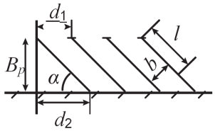
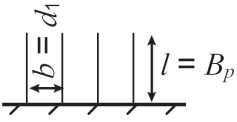
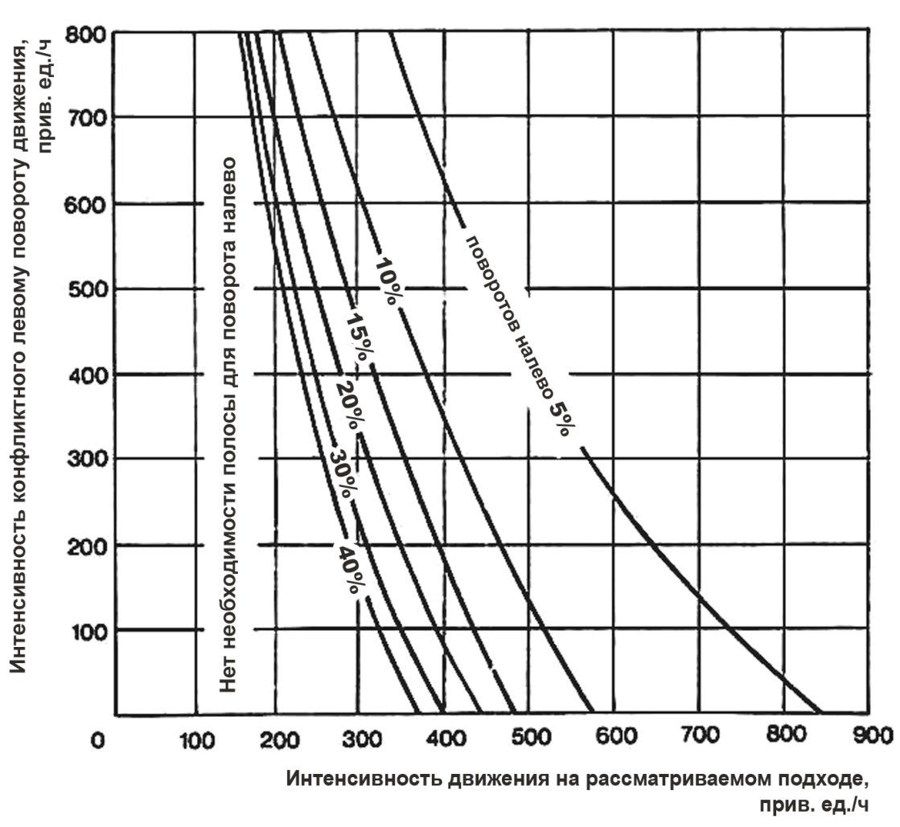
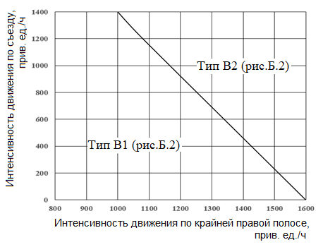
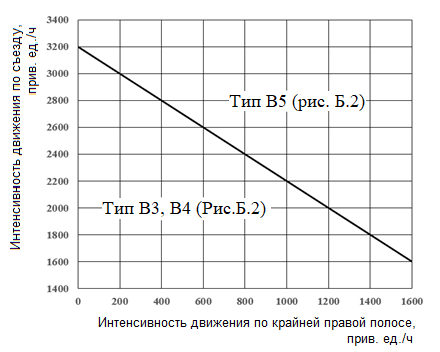
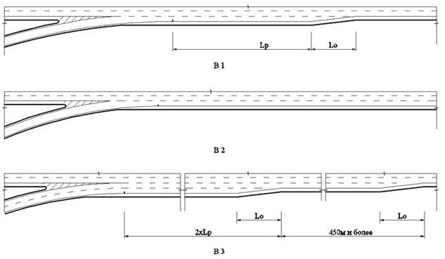
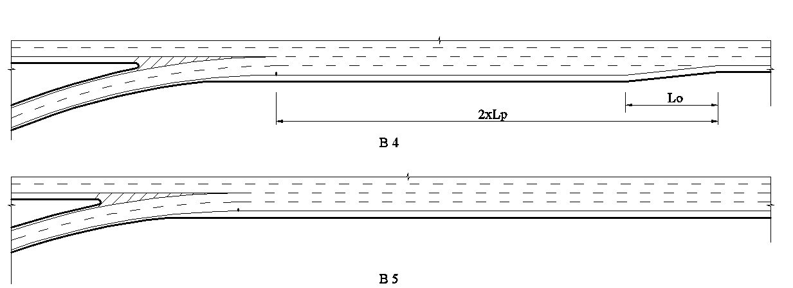
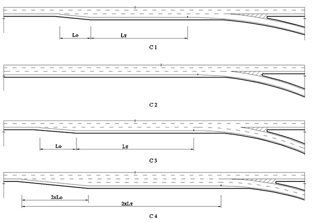

СП 396.1325800.2018 «Улицы и дороги населенных пунктов. Правила градостроительно»
О документе: разработчики, утверждение, регистрация, ключевые слова
СВОД ПРАВИЛ
СП 396.1325800.2018
Правила градостроительного проектирования
Издание официальное
1 ИСПОЛНИТЕЛИ -Проектно -изыскательский и научно -исследовательский институт промышленного транспорта ЗАО «ПРОМТРАНСНИИПРОЕКТ» (ЗАО «ПРОМТРАНСНИИПРОЕКТ» ), Государственное автономное учреждение города Москвы «Научно -исследовательский и проектный институт Генерального плана города Москвы» (ГАУ Институт Генплана Москвы ), Федеральное государственное бюджетное образовательное учреждение высшего профессионального образования «Московский автомобильно -дорожный государственный технический университет» (ФГБОУ ВПО «МАДИ»)
2 ВНЕСЕН Техническим комитетом по стандартизации ТК 465 «Строительство»
3 ПОДГОТОВЛЕН к утверждению Департаментом градостроительной деятельности и архитектуры Министерства строительства и жилищно -коммунального хозяйства Российской Федерации (Минстрой России)
- 4 УТВЕРЖДЕН приказом Министерства строительства и жилищно -коммунального хозяйства Российской Федерации от 1 августа 2018 г. № 474/пр и введен в действие с 2 февраля 2019 г.
- 5 ЗАРЕГИСТРИРОВАН Федеральным агентством по техническому регулированию и метрологии (Росстандарт)
В случае пересмотра (замены) или отмены настоящего свода правил соответствующее уведомление будет опубликовано в установленном порядке. Соответствующая информация, уведомление и тексты размещаются также в информационной системе общего пользования -на официальном сайте разработчика (Минстрой России) в сети Интернет
© Минстрой России, 2018
Настоящий нормативный документ не может быть полностью или частично воспроизведен, тиражирован и распространен в качестве официального издания на территории Российской Федерации без разрешения Минстроя России
.
.
УДК
ОКС 91.020
Ключевые слова: городские улицы и дороги, классификация, планировочные параметры улично -дорожной сети, транспортно -планировочный каркас территории, транспорт и улично -дорожная сеть, пешеходная инфраструктура, велосипедная инфраструктура, функционирование городских улиц и дорог, обустройство улиц и дорог, безопасность дорожного движения, экологическая безопасность объектов улично -дорожной сети, земляное полотно, дорожные одежды
Руководитель организации - разработчика
ЗАО «ПРОМТРАНСНИИПРОЕКТ»
Исполнительный
директор
А.Ю. Эглескалн
Руководитель
Зам. директора
Л.А. Андреева
разработки
по науке
Исполнитель
Начальник отдела
И.П. Потапов
Комплексных исследований, стандартизации и логистического сопровождения проектов
СОИСПОЛНИТЕЛИ
Руководитель организации - разработчика
ГАУ « Институт Генплана Москвы
Директор
О.А. Гармаш
Руководитель
разработки
Рук. НПО Транспорта и дорог
И.А. Бахирев
Исполнитель
Начальник сектора научного
обеспечения развития транспортного
комплекса города
НПО транспорта и дорог
Е.Н. Боровик
Введение
6 ВВЕДЕН ВПЕРВЫЕ
Настоящий свод правил разработан в целях повышения уровня безопасности людей в зданиях и сооружениях в соответствии с требованиями федеральных законов от 30 декабря 2009 г. № 384 -ФЗ «Технический регламент о безопасности зданий и сооружений» [1] и от 23 ноября 2009 г. № 261 -ФЗ «Об энергосбережении и повышении энергетической эффективности и о внесении изменений в отдельные законодательные акты Российской Федерации» [2].
Настоящий свод правил разработан в развитие СП 42.13330.2016 «СНиП 2.07.01 -89* Градостроительство. Планировка и застройка городских и сельских поселений» с учетом СП 34.13330.2012 «СНиП 2.05.02 -85* Автомобильные дороги».
Свод правил разработан авторским коллективом: ЗАО «ПРОМТРАНСНИИПРОЕКТ» (руководитель темы -академик PAT В.А. Сидяков, д -р техн. наук Л.А. Андреева, И.П. Потапов, И.В. Музыкин ); ГАУ города Москвы « Научно -исследовательский и проектный институт Генерального плана города Москвы» (канд. техн. наук М.Г. Крестмейн , канд. техн. наук И.А. Бахирев, канд. техн. наук Е.Н. Боровик, В.В. Давыдов, канд. техн. наук А.А. Карасев, канд. техн. наук Н.К. Кирюшина, Г.А. Новиков, канд. техн. наук В.Н. Попов, Т.В. Сигаева ); ФГБОУ ВПО «Московский автомобильно -дорожный государственный технический университет» (МАДИ) (д -р техн. наук П.И. Поспелов, канд. техн. наук В.П. Залуга, канд. техн. наук А.В. Косцов, канд. техн. наук Д.С. Мартяхин, д -р техн. наук Ю.В. Трофименко, канд. техн. наук Б.А. Щит ); при участии Комитета по архитектуре и строительству города Москвы ( С.В. Костин ); ГБУ « Московский городской трест геолого -геодезических и картографических работ» (канд. техн. наук Д.М. Немчинов ); Иркутского национального исследовательского технического университета (д -р техн. наук А.Ю. Михайлов ); ФГБОУ ВО « Санкт -Петербургский государственный архитектурно -строительный университет» (д -р экон. наук А.И. Солодкий ); АО « Моспроект -3 » ( Г.А. Эдельман ); ФАУ « Российский дорожный научно -исследовательский институт» (канд. техн. наук И.Ф. Живописцев ); ФГБОУ ВПО « Саратовский государственный технический университет имени Ю.А. Гагарина» (д -р техн. наук В.В. Столяров ); а также при участии М.Б. Гофштейна, А.В. Егорова, Д.В. Енина, Е.И. Ениной, Ю.В. Короткова, М.А. Мешалкина, А.В. Муравьева, О.В. Скворцова .
УЛИЦЫ И ДОРОГИ НАСЕЛЕННЫХ ПУНКТОВ Правила градостроительного проектирования
Streets and roads of settlements. Regulation of urban
planning
| Дата | введения - 2019-02-02 | |||||||
|---|---|---|---|---|---|---|---|---|
| 1 Область применения | ||||||||
| 2 | ||||||||
| Нормативные ссылки | ||||||||
| В настоящем своде правил использованы нормативные ссылки на | следующие доку- | |||||||
| менты: | ||||||||
| ГОСТ 17.4.3.01 - 83 Охрана природы. Почвы. Общие требования к отбору проб | ||||||||
| ГОСТ 24451 - 80 Тоннели автодорожные. Габариты приближения строений и обору- | ||||||||
| ГОСТ 32957 - 2014 Дороги автомобильные общего пользования. Экраны акустиче- | ||||||||
| ские. Технические требования | ||||||||
| ГОСТ 33150 - 2014 Дороги автомобильные общего пользования. Проектирование пе- | ||||||||
| шеходных и велосипедных дорожек. Общие требования | ||||||||
| ГОСТ Р 51256 - 2018 Технические средства организации дорожного движения. Раз- метка дорожная. Классификация. Технические требования | ||||||||
| ГОСТ Р 52131 - 2003 Средства отображения для инвалидов. требования движения. Све- | ||||||||
| дорожные. Типы и основные параметры. Общие технические требования. Методы | ||||||||
| ГОСТ Р 52289 - 2004 Технические средства организации дорожного движения. Пра- | ||||||||
| ляющих устройств | ||||||||
| вила применения дорожных знаков, разметки, светофоров, дорожных ограждений и | ||||||||
| направ- | ||||||||
| испытаний | ||||||||
| тофоры | ГОСТ Р 52282 - 2004 Технические | средства организации | дорожного | Технические | информации | знаковые |
ГОСТ Р 52290 -2004 Технические средства организации дорожного движения. Знаки дорожные. Общие технические требования ГОСТ Р 52605 -2006 Технические средства организации дорожного движения. Искусственные неровности. Общие технические требования. Правила применения ГОСТ Р 52748 -2007 Дороги автомобильные общего пользования. Нормативные нагрузки, расчетные схемы нагружения и габариты приближения ГОСТ Р 52765 -2007 Дороги автомобильные общего пользования. Элементы обустройства. Классификация ГОСТ Р 52766 -2007 Дороги автомобильные общего пользования. Элементы обустройства. Общие требования ГОСТ Р 55844 -2013 Освещение наружное утилитарное дорог и пешеходных зон. Нормы ГОСТ Р 56162 -2014 Выбросы загрязняющих веществ в атмосферу. Метод расчета выбросов от автотранспорта при проведении сводных расчетов для городских населенных пунктов СП 14.13330.2018 «СНиП II7 -81* Строительство в сейсмических районах» СП 31.13330.2012 «СНиП 2.04.02 -84* Водоснабжение. Наружные сети и сооружения» (с изменениями № 1, № 2, № 3 ) СП 32.13330.2012 «СНиП 2.04.03 -85 Канализация. Наружные сети и сооружения» (с изменениями № 1, № 2 ) СП 34.13330.2012 «СНиП 2.05.02 -85* Автомобильные дороги» (с изменением № 1) СП 35.13330.2011 «СНиП 2.05.03 -84* Мосты и трубы» (с изменением № 1) СП 42.13330.2016 «СНиП 2.07.01 -89* Градостроительство. Планировка и застройка городских и сельских поселений» СП 51.13330.2011 «СНиП 23 -03 -2003 Защита от шума» (с изменением № 1) СП 52.13330.2016 «СНиП 23 -05 -95* Естественное и искусственное освещение» СП 59.13330.2016 «СНиП 35 -01 -2001 Доступность зданий и сооружений для маломобильных групп населения» СП 82.13330.2016 «СНиП III -10 -75 Благоустройство территорий» СП 113.13330.2016 «СНиП 21 -02 -99* Стоянки автомобилей» СП 116.13330.2012 «СНиП 22 -02 -2003 Инженерная защита территорий, зданий и сооружений от опасных геологических процессов. Основные положения» СП 124.13330.2012 «СНиП 41 -02 -2003 Тепловые сети»
СП 131.13330.2012 «СНиП 23 -01 -99* Строительная климатология» (с изменениями № 1, № 2)
СП 140.13330.2012 Городская среда. Правила проектирования для маломобильных групп населения (с изменением № 1)
СП 249.1325800.2016 Коммуникации подземные. Проектирование и строительство закрытым и открытым способами
СП 276.1325800.2016 Здания и территории. Правила проектирования защиты от шума транспортных потоков
СП 323.1325800.2017 Территории селитебные. Правила проектирования наружного освещения
СанПиН 2.1.5.980 -00 Гигиенические требования к охране поверхностных вод
СанПиН 2.1.5.2582 -10 Санитарно -эпидемиологические требования к охране прибрежных вод морей от загрязнения в местах водопользования населения
СанПиН 2.1.6.1032 -01 Гигиенические требования к обеспечению качества атмосферного воздуха населенных мест
СанПиН 2.1.7.1287 -03 Санитарно -эпидемиологические требования к качеству почв
СанПиН 2.2.1/2.1.1.1200 -03 Санитарно -защитные зоны и санитарная классификация предприятий, сооружений и иных объектов
СН 2.2.4/2.1.8.562 -96 Шум на рабочих местах, в помещениях жилых, общественных зданий и на территории жилой застройки
Примечание -При пользовании настоящим сводом правил целесообразно проверить действие ссылочных документов в информационной системе общего пользования -на официальном сайте федерального органа исполнительной власти в сфере стандартизации в сети Интернет или по ежегодному информационному указателю «Национальные стандарты», который опубликован по состоянию на 1 января текущего года, и по выпускам ежемесячного информационного указателя «Национальные стандарты» за текущий год. Если заменен ссылочный документ, на который дана недатированная ссылка, то рекомендуется использовать действующую версию этого документа с учетом всех внесенных в данную версию изменений. Если заменен ссылочный документ, на который дана датированная ссылка, то рекомендуется использовать версию этого документа с указанным выше годом утверждения (принятия). Если после утверждения настоящего свода правил в ссылочный документ, на который дана датированная ссылка, внесено изменение, затрагивающее положение, на которое дана ссылка, то это положение рекомендуется применять без учета данного изменения. Если ссылочный документ отменен без замены, то положение, в котором дана ссылка на него, рекомендуется применять в части, не затрагивающей эту ссылку. Сведения о действии сводов правил целесообразно проверить в Федеральном информационном фонде стандартов.
3 Термины , определения и сокращения
3.1 Термины и определения
В настоящем своде правил применены термины по СП 42.13330, СП 34.13330 , ГОСТ 33150 , а также следующие термины с соответствующими определениями:
- 3.1. 1 боковой проезд: Элемент поперечного профиля магистральных улиц общегородского или районного значения, устраиваемый параллельно основной проезжей части.
- 3.1. 2 выделенные полосы движения для наземного пассажирского транспорта общего пользования: Полоса движения на основной проезжей части, выделенная разметкой или конструктивно и предназначенная исключительно для движения наземного пассажирского транспорта общего пользования.
- 3.1. 3 доступ на улицу или дорогу: Управляемая планировочными средствами или средствами организации дорожного движения возможность въезда -съезда транспортных средств с пересекаемых или примыкающих улиц или дорог и с прилегающих территорий.
- 3.1.4 канализированное пересечение: Пересечение в одном уровне с выделенными с помощью разделительных островков полосами для различных направлений движения транспортных потоков.
- 3.1.5 категория улицы или городской дороги в населенных пунктах (проектная): Характеристика, отражающая градостроительную значимость и функциональное назначение улицы или дороги и определяющая параметры проектирования.
- 3.1.6 кольцевое пересечение: Пересечение в одном уровне с центральным островком в форме окружности и кольцевой проезжей частью.
- 3.1.7 наземный пассажирский транспорт общего пользования; НПТОП: Совокупность наземных видов транспорта, обслуживающих постоянно и временно проживающих в населенных пунктах, а также прибывающих из других населенных пунктов.
- 3.1.8 накопительная полоса: Дополнительная полоса движения на проезжей части перед пересечением улиц и дорог, предназначенная для накопления транспортных средств в ожидании маневра перестроения.
- 3.1.9 переходно -скоростная полоса ( здесь ) : Дополнительная полоса на проезжей части улиц и дорог , предназначенная для разгона или торможения транспортных средств при выполнении безопасного маневра перестроения при въезде в транспортный поток, движущийся в прямом направлении, или выезде из него.
3.1.10 пешеходные мосты: Коммуникации в виде сооружений открытого или закрытого типа, предназначенные для преодоления пешеходами водных объектов, оврагов и других естественных преград.
3.1. 11 пешеходные переходы: Коммуникации, предназначенные для движения пешеходов через улицы, дороги и другие искусственные преграды.
3.1. 12 поперечный профиль: Поперечное сечение улицы или дороги, которое, в зависимости от категории, включает: проезжую часть, боковые проезды, тротуары (пешеходные, технические) , полосы и (или ) дорожки для движения велотранспорта, полосы озеленения, полосы размещения ограждений, полосы безопасности, краевые и разделительные полосы, переходно -скоростные полосы, зоны озеленения, обочины, а также зоны для размещения инженерных коммуникаций и другие элементы.
3.1. 13 съезд: Элемент пересечений улиц и дорог в одном и разных уровнях, предназначенный для разделения транспортных потоков по направлениям.
Примечание -В составе пересечений в разных уровнях различают съезды: а) петлеобразные ; б) направленные (обеспечивающие повышенные пропускную способность и скорость движения транспорта).
3.1. 1 4 транспортное пересечение в разных уровнях (транспортная развязка): Транспортное сооружение на пересечении улиц/дорог, обеспечивающее разделение в пространстве пересекающихся транспортных потоков по всем направлениям или по отдельным направлениям движения транспорта.
3.1.15 транспортно -планировочный каркас населенных пунктов: Совокупность основных наиболее устойчивых элементов планировочной структуры поселения, включая территории системы общегородских центров (включая ядро исторического центра), сеть магистральных улиц и дорог, систему транспортно -пересадочных узлов; является основой формирования функционально -планировочной структуры населенного пункта.
3.1.16 уровень автомобилизации: Количество автотранспортных средств на 1000 жителей.
3.2 Сокращения
МГН -маломобильные группы населения ;
УДС -улично -дорожная сеть.
4 Общие положения
4. 1 Настоящий свод правил направлен на обеспечение градостроительными средствами безопасности движения на сети улиц и дорог в населенных пунктах (в развитие СП
42.13330) с учетом требований рационального использования природных ресурсов и охраны окружающей среды, сохранения памятников истории и культуры, защиты территорий населенных пунктов от неблагоприятных воздействий от автотранспорта, доступности транспортной инфраструктуры для населения, включая МГН.
4. 2 Настоящий свод правил предназначен для применения на различных стадиях планирования и проектирования улиц и дорог населенных пунктов.
4. 3 При разработке градостроительной документации сеть магистральных улиц и дорог населенного пункта следует проектировать как неотъемлемый элемент транспортного каркаса системы расселения населения Российской Федерации.
4.4 Сеть улиц и дорог следует проектировать в единстве с развитием всей транспортной инфраструктуры населенного пункта с учетом перспективного развития территорий, заложенного в документах территориального планирования Российской Федерации, территориального планирования субъектов Российской Федерации, документах территориального планирования муниципальных образований.
4.5 При проектировании сети улиц и дорог в составе документов территориального планирования субъектов Российской Федерации или документов территориального планирования муниципальных образований следует учитывать положения градостроительных документов более высокого уровня планирования [4] , [7].
4.6 Сеть улиц и дорог в населенных пунктах следует формировать с учетом ожидаемых на расчетный срок:
- проектной численности постоянного и дневного населения ;
- количества мест приложения труда с учетом транспортного спроса, формируемого физическими и юридическими лицами ;
- с учетом объемов ежедневной маятниковой миграции при соблюдении требований обеспечения безопасности [1] ;
- обеспечения нормативной доступности объектов и территорий различного функционального назначения.
4.7 При проектировании сети улиц и дорог в городе следует учитывать уровень автомобилизации (существующий и прогнозируемый), а также распределение поездок на личном и общественном транспорте (существующее и прогнозируемое). Следует обеспечивать достаточную пропускную способность сети улиц и дорог и транспортных пересечений , исходя из прогнозируемого на расчетный срок уровня автомобилизации. Количество автомобилей, прибывающих в город из других населенных пунктов, и транзитных потоков следует определять расчетом, исходя из численности постоянного и временного населения, количества мест приложения труда, численности населения населенных пунктов, тяготеющих к городу, и ожидаемого уровня автомобилизации.
4.8 При проектировании сети улиц и дорог в населенном пункте следует создавать приоритетные условия для развития пассажирского транспорта общего пользования , создавать условия для безопасного велосипедного и пешеходного движения.
4.9 Для обеспечения рационального пользования УДС необходимо обеспечивать возможность движения транспорта с постепенным повышением (понижением) параметров используемых категорий улиц: следует предусматривать выезды с территорий кварталов на УДС местного значения ; с улиц и дорог местного значения -на улицы и дороги районного значения ; с улиц и дорог районного значения -на улицы и дороги общегородского значения.
В условиях реконструкции следует обеспечивать вышеуказанную иерархию доступа к улицам и дорогам различных категорий, предусматривая , при необходимости , дополнительное развитие улиц и дорог недостающих категорий.
4.10 На территориях жилых, общественно -деловых, производственных и рекреационных зон следует обеспечивать возможность велосипедного движения.
4. 11 Мероприятия по развитию сети автомобильных дорог регионального или межмуниципального значения следует предусматривать в составе схем территориального планирования субъектов Российской Федерации [4].
4. 12 Мероприятия по развитию сети автомобильных дорог местного значения следует предусматривать в составе документов территориального планирования муниципальных образований [4].
4. 13 При проектировании конструкций земляного полотна и дорожных одежд улиц и дорог населенных пунктов следует руководствоваться требованиями СП 34.13330 с учетом особенностей населенных пунктов.
4.14 При проектировании улиц и дорог населенных пунктов в сложных геологических условиях, в том числе в сейсмических районах, а также в различных климатических условиях, предъявляющих особые требования к конструкциям земляного полотна и дорожных одежд, следует руководствоваться СП 14.13330, СП 116.13330, СП 131.13330, а также соответствующими пунктами СП 34.13330 и иными нормативно -техническими документами, устанавливающими требования к проектированию конструктивных элементов улиц и дорог.
4.15 При проектировании УДС следует обеспечивать доступность для МГН всех категорий улиц и дорог и объектов, размещаемых вдоль улиц и дорог , с учетом требований ГОСТ Р 52131, СП 59.13330.
5 Улицы и дороги в населенных пунктах
5.1 Общие требования к проектированию улично -дорожной сети населенных пунктов
- 5.1.1 Проектирование сети улиц и дорог населенного пункта следует осуществлять:
- в составе транспортного раздела генерального плана населенного пункта;
- в составе программ комплексного развития транспортной инфраструктуры поселений, городских округов;
- в составе проектов планировки территорий, в том числе проектов планировки территорий, предусматривающих размещение одного или нескольких линейных объектов УДС ;
- при разработке проектной документации.
5.1.2 В составе транспортного раздела генерального плана следует разрабатывать предложения по организации транспортного обслуживания населения населенного пункта и предусматривать соответствующее развитие транспортной инфраструктуры, включая формирование сети улиц и дорог.
5.1.3 При проектировании УДС населенного пункта в составе генерального плана должны быть:
- спрогнозированы объемы пассажирских и грузовых перевозок и их распределение по видам транспорта. На этой основе должны быть определены потребности в развитии транспортной инфраструктуры, разработаны предложения по размещению требуемых объектов транспортной инфраструктуры во взаимоувязке с внешним транспортом, включая автомобильные дороги;
- разработана концепция развития транспортной инфраструктуры и организации транспортного обслуживания населения;
- сформирован транспортно -планировочный каркас населенного пункта, установлены классификационные категории улиц и дорог (в соответствии с СП 42.13330), определены их основные параметры;
- обосновано местоположение и количество основных транспортно -пересадочных узлов, формируемых на станциях скоростного внеуличного транспорта (железной дороги, метрополитена) и (или ) станциях или остановочных пунктах иных видов скоростного транспорта;
- сформулированы принципиальные подходы к определению скоростных режимов движения транспорта на улицах и дорогах различных категорий в различных функциональных зонах города;
- определено местоположение и количество основных транспортных развязок, формируемых на пересечениях магистральной УДС общегородского значения;
- определены основные направления формирования парковочного пространства и допустимая доля мест для размещения на УДС ;
- определены основные направления формирования инфраструктуры для пешеходного и велосипедного движения ;
- определены основные направления развития УДС в зонах жилой застройки, общественно -деловых и производственных зонах.
5.1.4 Разработку УДС в составе генерального плана следует проводить в соответствии с требованиями [4] и настоящего свода правил.
5.1.5 При разработке программ комплексного развития транспортной инфраструктуры населенных пунктов разрабатываются принципиальные варианты реализации мероприятий по развитию УДС (в составе мероприятий по развитию транспортной инфраструктуры ) и проводится укрупненная оценка по целевым показателям (индикаторам) развития УДС с последующим выбором предлагаемого к реализации варианта.
5.1.6 В составе программ комплексного развития транспортной инфраструктуры, выполняемой в развитие решений генерального плана, должны быть представлены:
- анализ сложившейся транспортной ситуации ;
- прогноз требуемых объемов перевозок пассажиров и грузов на территории населенного пункта ;
- обоснование выбранного варианта реализации мероприятий по развитию транспортной инфраструктуры;
- предложения по источникам финансирования мероприятий по проектированию, строительству, реконструкции объектов транспортной инфраструктуры , предлагаемых к реализации варианта развития транспортной инфраструктуры;
- расчеты ожидаемой эффективности реализации мероприятий.
5.1.7 При разработке проектов планировки территории, в том числе проектов планировки территорий, предусматривающих размещение одного или нескольких линейных объ- ектов УДС , должны быть детализированы проектные решения, принятые в составе генерального плана. В составе проектов планировки территории должны быть решены также вопросы организации транспортного обслуживания проживающих и работающих на этой территории.
5.1.8 В составе проектов планировки территории должны быть определены параметры сети улиц и дорог: количество и ширина проезжих частей, количество и ширина полос движения, ширина тротуаров, места расположения остановочных пунктов пассажирского транспорта общего пользования, места расположения мест для хранения автотранспортных средств и другие элементы УДС , а также элементы благоустройства и озеленения.
5.1.9 В составе проектов планировки территории, предусматривающих размещение одного или нескольких линейных объектов УДС, предложения по организации транспортного обслуживания населения разрабатываются в масштабах 1:10 000, 1:5000; планировочные решения линейных объектов проектируются в масштабах 1:2000, 1:500 в соответствии с требованиями настоящего свода правил с учетом [4].
5.1.10 При подготовке проектной документации должны быть реализованы проектные решения, принятые в составе проектов планировки территорий, в том числе проектов планировки территорий, предусматривающих размещение одного или нескольких линейных объектов УДС.
Разработку проектной документации на улицы и дороги населенных пунктов следует проводить в соответствии с требованиями настоящего свода правил, а также в соответствии с [6]. При проектировании автомобильных дорог, проходящих вне населенных пунктов, следует учитывать требования ГОСТ Р 52765, ГОСТ Р 52766.
5.1.11 Проектирование освещения улиц и дорог следует осуществлять в соответствии с требованиями СП 5 2 .13330, СП 323.1325800.
5.2 Формирование транспортно -планировочного каркаса Основные принципы
5.2.1 При формировании транспортно -планировочного каркаса населенных пунктов на стадии разработки генерального плана следует учитывать необходимость обеспечения транспортных связей для различных уровней пассажирских и грузовых перевозок, включая:
- местные (для населенных пунктов численностью менее 150 тыс. жителей );
- районные ;
- внутригородские , а также обеспечивающие выход на автомобильные дороги, по которым осуществляются регионально -городские , внутрирегиональные, межрегиональные и международные транспортные связи.
5.2.2 Транспортно -планировочный каркас формируется в увязке с транспортной системой прилегающих территорий.
5.2.3 Транспортно -планировочный каркас следует проектировать в виде иерархически построенной системы с учетом функционального назначения улиц и дорог населенных пунктов, перспективной интенсивности транспортного, пешеходного, велосипедного движения, с учетом архитектурно -планировочной организации и перспективного развития территорий. При разработке генерального плана наличие этих свойств определяется на основе анализа сложившегося и предусмотренного действующим генеральным планом транспортно -планировочного каркаса населенного пункта.
5.2.4 Сеть улиц и дорог населенных пунктов следует проектировать как устойчивую систему: должна быть обеспечена взаимосвязь территорий обслуживания между собой и с центром города. Надежность транспортного каркаса обеспечивается за счет формирования дублирующих направлений для основных улиц и дорог общегородского значения.
5.2.5 Шаг сети улиц и дорог населенных пунктов, определяющий размеры микрорайонов и кварталов, следует принимать:
- для магистральных улиц на территориях жилой многоквартирной застройки -300 -500 м;
- для улиц местного значения -150 -250 м (в зависимости от конкретной градостроительной ситуации).
5.2.6 Прохождение автомобильных дорог, осуществляющих межрегиональные и внутрирегиональные транспортные связи , следует предусматривать в обход населенных пунктов, если иное не предусмотрено генеральным планом рассматриваемого населенного пункта в соответствии с СП 34.13330.
5.2.7 При прохождении автомобильных дорог различных классов по территории населенных пунктов их следует , в зависимости от перспектив освоения прилегающих территорий , проектировать как городские дороги или улицы в соответствии с требованиями СП 42.13330 и настоящего свода правил.
При реконструкции автомобильных дорог, проходящих по территории населенного пункта, следует предусматривать доведение их параметров до требований , предусмотренных в СП 42.13330 для улиц и городских дорог соответствующих категорий.
Классификация городских улиц и дорог.
Основные категории, планировочные и расчетные параметры
5.2.8 Основные категории улиц и дорог следует принимать в соответствии с пунктом 11.4. СП 42.13330.2016.
5.2.9 При разработке генерального плана состав категорий улиц и дорог и их классификацию допускается дополнять или применять их неполный состав в зависимости от величины населенного пункта, его планировочной структуры, климатических условий, рельефа местности, объемов движения транспорта , состава потока, а также сложившейся и ожидаемой транспортно -градостроительной ситуации.
5.2.10 Основные планировочные параметры улиц и дорог определяются в зависимости от расчетной скорости. Расчетную скорость при проектировании улиц и дорог различных категорий в населенных пунктах следует назначать в соответствии с таблицами 11.2, 11.4 и 11.6 СП 42.13330.2016.
5.2. 11 При проектировании улиц и дорог в населенных пунктах следует применять максимальные расчетные скорости (из числа приведенных в вышеуказанных таблицах). В сложных градостроительных условиях (в случаях выраженного рельефа местности, плотности застройки, ее историко -культурной ценности, высокой стоимости освобождения территории и других факторов) допускается снижать расчетные скорости в пределах диапазонов, указанных для каждой категории улиц и дорог, но не менее допустимых нижних значений диапазонов, указанных в таблице 11.2 СП 42.13 3 30.2016.
5.2. 12 Назначение геометрических параметров улиц и дорог следует проводить с учетом расчетных транспортных средств, осуществляющих движение по проектируемой улице или дороге. Основные параметры расчетных транспортных средств приведены в таблице Е.1.
5.2. 13 Расчетную скорость на боковых проездах улиц и дорог общегородского значения следует устанавливать , как для улиц и дорог районного или местного значения.
5.2.14 Расчетную скорость на боковых проездах улиц и дорог районного значения следует устанавливать , как для улиц и дорог местного значения.
5.2.15 В целях обеспечения повышенных требований безопасности пешеходного движения на отдельных территориях населенного пункта допускается вводить зоны замедления движения транспорта с разрешенной скоростью 20 -30 км/ч, которые могут предусматриваться:
- на территориях жилой застройки ;
- на УДС, прилегающей к территориям детских и социальных учреждений ;
- на территориях общественных центров ;
- в зонах концентрации памятников историко -культурного наследия и др.
5.2.16 На территории исторического центра населенного пункта, а также на УДС , обслуживающей общественно -деловые центры, торговые комплексы и др. , допускается снижать разрешенные скорости движения транспорта до 40 км/ч.
5.2.17 Для снижения скорости движения следует предусматривать мероприятия в соответствии с 5.4.5.
5.2.18 Планировочные и расчетные параметры улиц и дорог следует принимать в соответствии с пунктом 11.5 СП 42.13330.2016.
5.2.19 Планировочные и расчетные параметры парковых дорог, проездов и велосипедных дорожек следует принимать в соответствии с пунктом 11.7 СП 42.13330.2016.
Условия доступа транспортных средств
5.2.20 При проектировании сети улиц и дорог в населенных пунктах в целях повышения пропускной способности улиц и дорог и обеспечения безопасности движения следует руководствоваться условиями доступа транспортных средств в соответствии с требованиями таблицы 5.1.
Таблица 5.1 -Условия доступа транспортных средств
| Катего- рия улиц и дорог | Доступ к основной проезжей части | Сто- янка транс- порт- ных средств | Оста- новоч- ный пункт транс- порт- ных средств | Движение | Движение | Движение | Движение | Движение | Пеше- ходные пере- ходы через проез- жую часть |
|---|---|---|---|---|---|---|---|---|---|
| Катего- рия улиц и дорог | Доступ к основной проезжей части | Сто- янка транс- порт- ных средств | Оста- новоч- ный пункт транс- порт- ных средств | легко- вого транс- порта | обще- ствен- ного транс- порта | грузо- вого транс- порта | вело- сипе- дистов | пеше- ходов | Пеше- ходные пере- ходы через проез- жую часть |
| Магистральные городские дороги | Магистральные городские дороги | Магистральные городские дороги | Магистральные городские дороги | Магистральные городские дороги | Магистральные городские дороги | Магистральные городские дороги | Магистральные городские дороги | Магистральные городские дороги | Магистральные городские дороги |
| 1- го класса | Доступ с маги- стральных улиц и дорог только через транспортные пере- сечения в разных уровнях. Не обслу- живают объекты прилегающей тер- ритории, изолиро- ваны от застройки | Не до- пуска- ется | Не до- пуска- ется | Допус- кается | Допус- кается 1) | Допус- кается | Не до- пуска- ется в преде- лах ос- нов- ной проез- жей части 4) | Не до- пуска- ется | Допус- кается только вне про- езжей части |
| Катего- рия улиц и дорог | Доступ к основной проезжей части | Сто- янка транс- порт- ных средств | Оста- новоч- ный пункт транс- порт- ных | Движение | Движение | Движение | Движение | Движение | Пеше- ходные пере- |
|---|---|---|---|---|---|---|---|---|---|
| Катего- рия улиц и дорог | Доступ к основной проезжей части | Сто- янка транс- порт- ных средств | Оста- новоч- ный пункт транс- порт- ных | легко- вого транс- порта | обще- ствен- ного транс- порта | грузо- вого транс- порта | вело- сипе- дистов | пеше- ходов | ходы через проез- |
| 2- го класса | Доступ с маги- стральных улиц и дорог через транс- портные пересече- ния в разных уров- нях, пересечения со светофорным регу- лированием и при- мыкания (с право- поворотным движе- нием) | Не до- пуска- ется | средств Допус- кается | Допус- кается | Допус- кается | Допус- кается | Не до- пуска- ется в преде- лах ос- нов- ной проез- жей части 4) | До- пуска- ется по пе- ше- ход- ным до- рож- кам | часть Допус- кается только вне про- езжей части или в уровне проез- жей ча- сти со свето- форным регули- рова- |
| нием Магистральные улицы общегородского значения | нием Магистральные улицы общегородского значения | нием Магистральные улицы общегородского значения | нием Магистральные улицы общегородского значения | нием Магистральные улицы общегородского значения | нием Магистральные улицы общегородского значения | нием Магистральные улицы общегородского значения | нием Магистральные улицы общегородского значения | нием Магистральные улицы общегородского значения | нием Магистральные улицы общегородского значения |
| 1- го класса | Доступ с маги- стральных улиц и дорог через транс- портные пересече- ния в разных уров- нях. Доступ с мест- ных улиц и дорог возможен только на боковые проезды этой улицы. Непо- средственный въезд и выезд от объектов прилегающей тер- ритории на основ- ную проезжую часть не допуска- ется. Пересечения в одном уровне не до- | Не до- пуска- ется на основ- ной проез- жей ча- сти | Не до- пуска- ется на основ- ной проез- жей ча- сти | Допус- кается | Допус- кается | Допус- кается | Не до- пуска- ется в преде- лах ос- нов- ной проез- жей части 4) | До- пуска- ется | Допус- кается только вне про- езжей части |
| 2- го класса | пускаются Доступ с маги- стральных улиц и дорог через транс- портные пересече- ния в разных уров- нях, пересечения со | Не до- пуска- ется на основ- ной | Разре- шена | Допус- кается | Допус- кается | Допус- кается | Не до- пуска- ется в преде- лах ос- | До- пуска- ется 5) | Допус- кается вне про- езжей части или в |
| Катего- рия улиц и | Доступ к основной проезжей части | Сто- янка транс- | Оста- новоч- ный пункт транс- порт- | Движение | Движение | Движение | Движение | Движение | Пеше- |
|---|---|---|---|---|---|---|---|---|---|
| дорог | порт- ных средств | ных средств | легко- вого транс- порта | обще- ствен- ного транс- порта | грузо- вого транс- порта | вело- сипе- дистов | пеше- ходов | ходные пере- ходы через проез- жую часть | |
| светофорным регу- лированием и при- мыкания (с право- поворотным движе- нием). В условиях реконструкции до- пускается ограни- ченный доступ с местных улиц и до- рог. Непосредствен- ный въезд и выезд от объектов на про- езжую часть огра- ничен | проез- жей ча- сти | нов- ной проез- жей части 4) | уровне проез- жей ча- сти со свето- форным регули- рова- нием | ||||||
| 3- го класса | Доступ с маги- стральных и мест- ных улиц через пе- ресечения и примы- кания. В условиях реконструкции до- пускается сохра- нять непосред- ственный доступ к объектам на улице в случае невозможно- сти транспортного обслуживания с других улиц | Допус- кается 2) | Допус- кается | Допус- кается | Допус- кается | Допус- кается | До- пуска- ется 4) | До- пуска- ется 5) | Допус- кается вне про- езжей части или в уровне проез- жей ча- сти со свето- форным регули- рова- нием |
| Магистральные улицы районного значения | Магистральные улицы районного значения | Магистральные улицы районного значения | Магистральные улицы районного значения | Магистральные улицы районного значения | Магистральные улицы районного значения | Магистральные улицы районного значения | Магистральные улицы районного значения | Магистральные улицы районного значения | Магистральные улицы районного значения |
| Маги- страль- ные улицы район- ного значе- ния | Доступ с маги- стральных и мест- ных улиц через пе- ресечения и примы- кания. В условиях реконструкции до- пускается сохра- нять непосред- ственный доступ к объектам на улице в случае невозможно- сти транспортного | Разре- шена 2) | Разре- шена | Допус- кается | Допус- кается | Допус- кается | До- пуска- ется 4) | До- пуска- ется 5) | Допус- кается в уровне проез- жей ча- сти со свето- форным регули- рова- нием или без |
| Катего- рия улиц и дорог | Доступ к основной проезжей части | Сто- янка транс- порт- ных средств | Оста- новоч- ный пункт транс- порт- ных | Движение | Движение | Движение | Движение | Движение | Пеше- ходные пере- ходы через проез- |
|---|---|---|---|---|---|---|---|---|---|
| Катего- рия улиц и дорог | Доступ к основной проезжей части | Сто- янка транс- порт- ных средств | Оста- новоч- ный пункт транс- порт- ных | легко- вого транс- порта | обще- ствен- ного транс- порта | грузо- вого транс- порта | вело- сипе- дистов | пеше- ходов | Пеше- ходные пере- ходы через проез- |
| обслуживания с других улиц | свето- фор- ного ре- гулиро- вания 6) | ||||||||
| Улицы и дороги местного значения | Улицы и дороги местного значения | Улицы и дороги местного значения | Улицы и дороги местного значения | Улицы и дороги местного значения | Улицы и дороги местного значения | Улицы и дороги местного значения | Улицы и дороги местного значения | Улицы и дороги местного значения | Улицы и дороги местного значения |
| Улицы в зонах жилой за- строй - ки | Доступ осуществля- ется через пересече- ния и примыкания. Непосредственный доступ к объектам | Допус- кается 2) | Допус- кается | Допус- кается | Допус- кается | Не до- пуска- ется 3) | До- пуска- ется | До- пуска- ется | Допус- кается в уровне проез- жей ча- сти |
| Улицы в обще- ственно - дело- вых и тор- говых | Доступ осуществля- ется через пересече- ния и примыкания. Непосредственный доступ к объектам | Допус- кается 2) | Разре- шена | Допус- кается | Допус- кается | Не до- пуска- ется 3) | До- пуска- ется | До- пуска- ется | Допус- кается в уровне проез- жей ча- сти |
| зонах Улицы и до- роги в про - извод- ствен- ных зо- нах | Доступ осуществля- ется через пересече- ния и примыкания. Непосредственный доступ к объектам | Допус- кается | Допус- кается | Допус- кается | Допус- кается | Допус- кается | До- пуска- ется 4) | ( До- пуска- ется по тро- туарам | Допус- кается в уровне проез- жей ча- сти |
| Пешеходные улицы и площади | Пешеходные улицы и площади | Пешеходные улицы и площади | Пешеходные улицы и площади | Пешеходные улицы и площади | Пешеходные улицы и площади | Пешеходные улицы и площади | Пешеходные улицы и площади | Пешеходные улицы и площади | Пешеходные улицы и площади |
| Пеше- ходные улицы и пло- щади | Доступ транспорт- ных средств запре- щен | Не до- пуска- ется | Не до- пуска- ется | Не до- пуска- ется | Не до- пуска- ется | Не до- пуска- ется 3) | До- пуска- ется | До- пуска- ется | Не тре- буется |
| 1) В целях организации экспресс - и скоростных маршрутов. 2) С учетом устройства карманов для стоянки транспортных средств. 3) Разрешено для транспортных средств, обслуживающих прилегающую территорию. 4 ) В пределах велосипедных дорожек, отделенных от проезжей части. 5) В пределах наземных пешеходных переходов и пешеходных переходов вне проезжей части. 6) | 1) В целях организации экспресс - и скоростных маршрутов. 2) С учетом устройства карманов для стоянки транспортных средств. 3) Разрешено для транспортных средств, обслуживающих прилегающую территорию. 4 ) В пределах велосипедных дорожек, отделенных от проезжей части. 5) В пределах наземных пешеходных переходов и пешеходных переходов вне проезжей части. 6) | 1) В целях организации экспресс - и скоростных маршрутов. 2) С учетом устройства карманов для стоянки транспортных средств. 3) Разрешено для транспортных средств, обслуживающих прилегающую территорию. 4 ) В пределах велосипедных дорожек, отделенных от проезжей части. 5) В пределах наземных пешеходных переходов и пешеходных переходов вне проезжей части. 6) | 1) В целях организации экспресс - и скоростных маршрутов. 2) С учетом устройства карманов для стоянки транспортных средств. 3) Разрешено для транспортных средств, обслуживающих прилегающую территорию. 4 ) В пределах велосипедных дорожек, отделенных от проезжей части. 5) В пределах наземных пешеходных переходов и пешеходных переходов вне проезжей части. 6) | 1) В целях организации экспресс - и скоростных маршрутов. 2) С учетом устройства карманов для стоянки транспортных средств. 3) Разрешено для транспортных средств, обслуживающих прилегающую территорию. 4 ) В пределах велосипедных дорожек, отделенных от проезжей части. 5) В пределах наземных пешеходных переходов и пешеходных переходов вне проезжей части. 6) | 1) В целях организации экспресс - и скоростных маршрутов. 2) С учетом устройства карманов для стоянки транспортных средств. 3) Разрешено для транспортных средств, обслуживающих прилегающую территорию. 4 ) В пределах велосипедных дорожек, отделенных от проезжей части. 5) В пределах наземных пешеходных переходов и пешеходных переходов вне проезжей части. 6) | 1) В целях организации экспресс - и скоростных маршрутов. 2) С учетом устройства карманов для стоянки транспортных средств. 3) Разрешено для транспортных средств, обслуживающих прилегающую территорию. 4 ) В пределах велосипедных дорожек, отделенных от проезжей части. 5) В пределах наземных пешеходных переходов и пешеходных переходов вне проезжей части. 6) | 1) В целях организации экспресс - и скоростных маршрутов. 2) С учетом устройства карманов для стоянки транспортных средств. 3) Разрешено для транспортных средств, обслуживающих прилегающую территорию. 4 ) В пределах велосипедных дорожек, отделенных от проезжей части. 5) В пределах наземных пешеходных переходов и пешеходных переходов вне проезжей части. 6) | 1) В целях организации экспресс - и скоростных маршрутов. 2) С учетом устройства карманов для стоянки транспортных средств. 3) Разрешено для транспортных средств, обслуживающих прилегающую территорию. 4 ) В пределах велосипедных дорожек, отделенных от проезжей части. 5) В пределах наземных пешеходных переходов и пешеходных переходов вне проезжей части. 6) | 1) В целях организации экспресс - и скоростных маршрутов. 2) С учетом устройства карманов для стоянки транспортных средств. 3) Разрешено для транспортных средств, обслуживающих прилегающую территорию. 4 ) В пределах велосипедных дорожек, отделенных от проезжей части. 5) В пределах наземных пешеходных переходов и пешеходных переходов вне проезжей части. 6) |
Улично -дорожная сеть в составе транспортно -пересадочных узлов
- 5.2. 21 Основные требования к проектированию УДС в составе транспортно -пересадочных узлов, формируемых в местах пересадки пассажиров различных видов транспорта:
- минимизация пересечений транспортных и пешеходных потоков;
- обеспечение безопасных подходов к местам размещения стоянок и парковок, остановочных пунктов общественного транспорта ;
- минимизация затрат времени пассажиров на пересадку.
Пересечения магистральных улиц и дорог
- 5.2. 22 Пересечения магистральных улиц (дорог ) в населенных пунктах устраиваются в одном или разных уровнях.
- 5.2. 23 Пересечения магистральных улиц (дорог ) в одном уровне следует проектировать в соответствии с 5.8.
- 5.2.24 Пересечения магистральных улиц (дорог ) в разных уровнях следует проектировать в соответствии с 5.9.
5.3 Обеспечение безопасности движения при проектировании улиц и дорог
- 5.3.1 При проектировании улиц и дорог для обеспечения безопасности движения транспорта и пешеходов следует предусматривать:
- рациональную и понятную схему организации движения транспортных средств и пешеходов на пересечениях ;
- условия видимости транспортных средств и пешеходов;
- удобство маневрирования транспортных средств при перестроениях.
- 5.3.2 Схемы организации движения транспортных средств и пешеходов на пересечениях следует обеспечивать путем разделения потоков по направлениям в соответствии с требованиями 5.8.
- 5.3. 3 Видимость транспортных средств конфликтных и попутных направлений следует обеспечивать в соответствии с требованиями 5.7.
- 5.3.4 Удобство маневрирования транспортных средств при перестроениях следует обеспечивать в соответствии с требованиями 5.8 и 5.9.
- 5.3.5 Для предотвращения выезда транспортного средства на проезжую часть встречного направления на магистральной УДС следует в поперечном профиле предусматривать центральную разделительную полосу (с установкой разделительного ограждения или без него) в соответствии с 5.5.
5.3.6 На участках улиц, прилегающих к территориям объектов социального назначения, объектов массового посещения , следует предусматривать мероприятия по снижению скорости движения автотранспортных средств с помощью планировочных решений и технических средств организации дорожного движения, в том числе перечисленных в 5.4.5.
5.3.7 Для обеспечения безопасности движения транспорта и пешеходов следует, наряду с планировочными мероприятиями, предусмотренными настоящим сводом правил, применять также организационные мероприятия в соответствии с ГОСТ Р 52289, ГОСТ Р 52290, ГОСТ Р 51256, ГОСТ Р 52605, ГОСТ Р 52282.
5.3.8 При проектировании планировочных элементов УДС при необходимости снижения расчетной скорости на предшествующих участках улицы или дороги должны устраиваться зоны протяженностью 50 -100 м, обеспечивающие постепенное снижение скорости с шагом не более 20 км/ч на каждом из последующих участков.
5.4 Улично -дорожная сеть в зонах различного функционального назначения Улично -дорожная сеть в зонах жилой застройки
5.4.1 Улицы и дороги с категорией не ниже магистральной (улицы и дороги общегородского и районного значения) могут являться границами жилых районов, наряду с линиями железных дорог, естественными и искусственными рубежами.
5.4. 2 Границами микрорайонов и кварталов могут являться улицы и дороги любых категорий, а также естественные и искусственные рубежи.
5.4. 3 Требуемая плотность УДС на территориях жилых зон определяется по условиям обеспечения расчетных объемов выезда трудоспособного населения в час пик (с учетом перспективной застройки).
5.4.4 Объемы размещения жилой застройки определяются с учетом потенциала транспортного обслуживания на период эксплуатации.
5.4.5 Для снижения скоростей движения на улицах местного значения в зонах жилой застройки и общественных зонах в соответствии с 5.2.15, 5.2.16 применяют следующие мероприятия:
- устройство островков между полосами движения противоположных направлений, в том числе сужающих проезжую часть ;
- трассировка улицы с непрямолинейной траекторией;
- искусственные неровности.
5.4.6 Ширину проезжей части проездов на территории кварталов следует принимать не менее 6 м.
5.4.7 При проектировании коммуникаций для пешеходного движения следует устраивать тротуары вдоль улиц местного значения. На территориях кварталов следует устраивать тротуары вдоль транспортных проездов (не менее чем с одной стороны).
На территориях жилых зон, в дополнение к тротуарам вдоль проездов, допускается также устраивать пешеходные дорожки по кратчайшим трассам.
При реконструкции территорий жилых зон при проектировании пешеходных трасс следует учитывать естественно сложившиеся пути движения пешеходов.
5.4.8 При проектировании транспортных и пешеходных коммуникаций на территориях жилых зон следует обеспечивать возможность передвижения МГН.
Улично -дорожная сеть в общественно -деловых зонах
5.4.9 При проектировании транспортных коммуникаций общественно -деловых зон следует предусматривать УДС различных категорий, обеспечивая транспортные связи местной УДС с районной, а районной -с магистральной сетью общегородского значения.
Требуемую плотность УДС на территориях общественно -деловых зон определяют по условиям обеспечения въезда в час пик расчетных объемов работающих и посетителей.
5.4.10 Объемы размещения общественной застройки различного функционального назначения определяют с учетом потенциала транспортного обслуживания.
Улично -дорожная сеть в производственных зонах
5.4.11 Следует обеспечивать надежность сети улиц и дорог в производственных зонах, предусматривая улицы и дороги, дублирующие основные направления транспортных связей, обеспечивая требуемую пропускную способность на расчетный срок с учетом грузооборота предприятий и численности работающих.
5.4.12 Ширину полос движения улиц и дорог на территории производственных зон в зависимости от ожидаемого состава транспортного потока и интенсивности движения транспортных средств следует предусматривать:
- при двух полосах движения (суммарно в двух направлениях) -3,75 -4,0 м на каждую полосу;
- при четырех полосах движения (суммарно в двух направлениях) допускается предусматривать левую полосу меньшей ширины (3,25 -3,75 м).
5.4.13 Следует предусматривать сеть пешеходных коммуникаций в пределах производственных зон с минимизацией пересечений с транспортными потоками, обеспечивая безопасные подходы к проходным предприятий.
5.4.14 На территории производственных зон следует обеспечивать подъезды к стоянкам легкового транспорта, погрузочно -разгрузочным площадкам и площадкам отстоя грузового автотранспорта, минимизируя количество точек пересечения основных транспортных потоков, связанных с жизнедеятельностью производственных зон, и транспортных потоков, направляющихся к стоянкам.
Улично -дорожная сеть в рекреационных зонах
5.4.15 Для обслуживания территорий рекреационных зон УДС следует ограничить доступ транспорта непосредственно на территорию зоны, предусматривая автомобильные стоянки вместимостью 100 автомобилей и более на удалении от входов на территорию не менее чем на 150 м. Стоянки вместимостью до 100 автомобилей допускается размещать на расстоянии менее 150 м от входов на территорию.
5.4.16 Остановочные пункты общественного транспорта следует размещать в радиусе доступности не более 250 м от входов на объекты рекреации.
5.4.17 Следует обеспечивать удобные и безопасные пешеходные связи от остановочных пунктов и стоянок до входов на территорию, исключая пересечения с путями движения транспорта.
5.5 Поперечный профиль
Основные планировочные элементы и параметры
5.5.1 Состав элементов поперечного профиля, их взаимное расположение и пространственное решение определяются особенностями прилегающей застройки, интенсивностью транспортного и пешеходного движения, видами транспорта, использованием надземного и подземного пространства.
5.5.2 Ширину проектируемых улиц и дорог следует определять путем расчета на основе их классификации и в зависимости от градостроительных требований, интенсивности движения транспорта и пешеходов, состава и количества элементов, размещаемых в пределах поперечного профиля, а также с учетом градостроительных факторов и назначения территории, с последующим закреплением красными линиями.
5.5.3 Поперечный профиль и количество полос движения на проезжей части следует назначать на основании перспективной часовой пиковой интенсивности движения.
5.5.4 В случаях равноценной застройки по обеим сторонам улицы ее поперечный профиль следует проектировать симметричным. При односторонней жилой или общественной застройке допускается предусматривать несимметричный профиль улицы в части устройства тротуаров.
- 5.5.5 Изменения поперечного профиля улиц и дорог рекомендуется осуществлять на пересечениях в одном или разных уровнях.
- 5.5.6 Поперечные профили мостов, путепроводов, эстакад и тоннелей следует проектировать в соответствии с требованиями ГОСТ Р 52748, СП 35.13330 и СП 249.1325800. Переход от размеров элементов поперечного профиля улиц или дорог к размерам элементов поперечного профиля мостовых сооружений и тоннелей следует устраивать с отгоном 1:100 (за единицу здесь принимается разность размеров элементов ) .
Поперечные уклоны
- 5.5.7 Проезжую часть на прямолинейных участках улиц и дорог при двухстороннем движении транспорта, а также на кривых в плане с радиусом, превышающим указанные в таблице 5. 2 для случая без устройства виража, а на магистральных улицах -в таблице 5. 3, следует предусматривать с двухскатным поперечным профилем.
- 5.5.8 Поперечный профиль тротуаров, велосипедных дорожек, газонов, парковочных мест следует устраивать односкатным, с уклоном в сторону проезжей части. В сложных градостроительных условиях и условиях реконструкции поперечный профиль указанных элементов допускается выполнять двухскатным или односкатным с уклоном от проезжей части.
- 5.5.9 Суммарный уклон поверхности покрытия проезжей части в любой точке поверхности должен составлять не менее 9 ‰.
- 5.5.10 Поперечные уклоны элементов поперечного профиля следует принимать по таблице 5. 2 .
Таблица 5.2 -Поперечные уклоны покрытия проезжих частей, тротуаров, газонов, велосипедных дорожек, берм
| Поперечный уклон покрытия,‰ | Поперечный уклон покрытия,‰ | Поперечный уклон покрытия,‰ | Поперечный уклон покрытия,‰ | Поперечный уклон покрытия,‰ | |
|---|---|---|---|---|---|
| Назначение поперечного уклона | проезжей части | тротуара | газона | велосипед- ной до- рожки | бермы |
| Основной | 20 | 20 | 20 | 20 | 40 |
| Минимальный | 10 | 5 | 5 | 5 | 5 |
| Максимальный | 30 | 20* | 50 | 30 | 60 |
* В сложных градостроительных условиях и при реконструкции допускается увеличение поперечного уклона тротуара до 30 ‰.
Полосы движения
5.5.11 Ширину полос движения следует назначать в зависимости от классификации категории улиц и дорог населенных пунктов по таблицам 11.2, 11.4 и 11.6 СП 42.13330.2016. Ширину крайней правой полосы движения магистральных улиц и дорог следует принимать 3,75 м.
5.5.12 Пропускную способность одной полосы движения проезжей части улицы, в том числе на пересечениях, следует определять по расчету в зависимости от видов транспорта, расчетной скорости движения, продольного уклона, количества полос движения, интенсивности движения транспортных средств с одной полосы движения на другую для правого или левого поворота.
Для предварительных расчетов пропускную способность улиц и дорог допускается принимать с учетом пропускной способности одной полосы движения в соответствии с данными таблицы 5. 3 , а коэффициента изменения пропускной способности , учитывающего перестроения транспортных средств на многополосных проезжих частях , -в соответствии с данными таблицы 5.4.
Таблица 5. 3 Пропускная способность одной полосы движения
| Режим движения | Пропускная способность по- лосы движения, прив. ед./ч |
|---|---|
| Непрерывное движение | 2000 |
| Регулируемое движение | 800 |
Примечание -Пропускная способность полосы движения на пересечениях в одном уровне определена для регулируемых светофорами пересечений при отсутствии левоповоротного движения. При наличии на пересечении левоповоротного движения пропускная способность полосы движения должна уменьшаться пропорционально величине левоповоротного движения.
Таблица 5.4 -Коэффициент изменения пропускной способности
| Наименование показателя | Значение показателя | Значение показателя | Значение показателя | Значение показателя |
|---|---|---|---|---|
| Количество полос движе- ния в одном направлении | 2 | 3 | 4 | 5 |
| Коэффициент изменения пропускной способности одной полосы движения | 0,95 | 0,90 | 0,86 | 0,84 |
Примечание -Пропускная способность многополосной улицы или дороги в одном направлении определяется путем умножения количества полос данного направления движения на пропускную способность одной полосы движения и коэффициент изменения пропускной способности одной полосы движения, соответствующий количеству полос этого направления.
- 5.5.13 На затяжных подъемах следует предусматривать устройство дополнительных полос для движения на подъем.
- 5.5.14 При проектировании УДС допускается устраивать выделенные полосы проезжей части для движения НПТОП в соответствии с требованиями 6.8.
Боковые проезды
- 5.5.15 Боковые проезды предусматриваются при наличии одного или нескольких следующих условий:
- недостаточная пропускная способность магистральной улицы;
- необходимость разделения транспортных потоков по скорости движения ;
- значительная интенсивность движения транспорта и пешеходов в сочетании с высокой концентрацией объектов массового тяготения на прилегающих территориях (при любом количестве полос на основной проезжей части);
- необходимость обслуживания прилегающей территории маршрутами НПТОП ;
- необходимость организации въездов -выездов с прилегающих территорий.
- 5.5.16 Боковые проезды следует устраивать с одной или двух сторон вдоль основной проезжей части.
- 5.5.17 Боковые проезды на магистральных улицах общегородского или районного значения следует проектировать по нормам улиц более низкой категории.
5.5.18 В границах транспортного пересечения в разных уровнях боковые проезды допускается использовать как съезды с основной магистральной улицы для организации поворотного движения автомобильного транспорта.
Сопряжения основной проезжей части с боковыми проездами следует предусматривать в соответствии с 5.8.40 -5.8.43.
5.5.19 Количество полос движения на боковых проездах следует определять расчетом, но принимать не более трех полос при наличии выделенной полосы для НПТОП и не более двух полос при отсутствии такой полосы.
Центральная и боковая разделительные полосы
5.5.20 Центральные разделительные полосы следует устраивать для разделения транспортных потоков противоположных направлений, а также для устройства левоповоротных полос и установки технических средств организации дорожного движения.
5.5.21 При проектировании разделительной полосы и островков безопасности на пересечениях улиц/дорог в одном уровне следует учитывать необходимость обеспечения возможности проезда крупногабаритных транспортных средств.
5.5.22 При проектировании центрального разделительного ограждения требуется соблюдение требований ГОСТ Р 52289.
5.5.23 Боковые разделительные полосы следует устраивать для разделения различных элементов поперечного профиля, а ширину полос следует назначать с учетом необходимости устройства уширений перед пересечениями, размещения подземных коммуникаций и строительных конструкций.
5.5.24 Минимальную ширину разделительных полос на улицах и дорогах следует принимать в соответствии с таблицей 11.7 СП 42.13330.2016.
5.5.25 В пределах боковых и центральных разделительных полос следует размещать ограждения, объекты озеленения и благоустройства или устраивать твердое покрытие.
5.5.26 На магистральных улицах (общегородского и районного значения) регулируемого движения и местных улицах, имеющих разделительные полосы шириной 6,0 м и более, допускается устройство бульваров.
Краевые предохранительные полосы, обочины, площадки для экстренной остановки
5.5.27 Между проезжей частью и бортовым камнем (либо лотком) на магистральных улицах и дорогах общегородского значения 1 -го класса с двух сторон от проезжей части должны быть предусмотрены краевые предохранительные полосы. Ширину краевых предохранительных полос следует назначать в зависимости от принятого типа ограждения и условий видимости, но не менее 0,75 м.
5.5.28 На магистральных городских дорогах общегородского значения 1 -го класса при наличии обочин их геометрические параметры следует принимать в соответствии с требованиями проектирования автомобильных дорог технических категорий IA и I Б в соответствии с СП 34.13330. В сложных градостроительных условиях и условиях реконструкции взамен обочин допускается устраивать краевые предохранительные полосы и площадки для экстренной остановки автомобилей шириной 3,0 м, длиной 80,0 м (включая отгон). Расстояние между двумя последовательно расположенными площадками не должно превышать 1000 м.
5.6 План и продольный профиль
Радиусы кривых в плане
5.6.1 Сопряжение прямолинейных участков улиц и дорог следует осуществлять круговыми кривыми (кривыми в плане).
5.6.2 Минимальные радиусы кривых в плане следует определять расчетом в соответствии с Ж. 1 .
5.6.3 Минимальный радиус кривых в плане допускается принимать по таблице 5.5. На кривых в плане радиусом менее рассчитанного из условия движения по двухскатному поперечному профилю, а на магистральных улицах и дорогах на кривых, радиусом менее указанных в таблице 5.6, необходимо предусматривать устройство виражей. В остальных случаях, а также в условиях реконструкции виражи допускается не устраивать.
Таблица 5.5 -Минимальный радиус кривых в плане
| Расчетная скорость, км/ч | Минимальный радиус кривой в плане, м, при поперечном уклоне проезжей части / виража,‰ | Минимальный радиус кривой в плане, м, при поперечном уклоне проезжей части / виража,‰ | Минимальный радиус кривой в плане, м, при поперечном уклоне проезжей части / виража,‰ | Минимальный радиус кривой в плане, м, при поперечном уклоне проезжей части / виража,‰ |
|---|---|---|---|---|
| Расчетная скорость, км/ч | 10 | 20 | 30 | 40 |
| 130 | 1700 / - | 1900 / 1200 | 2200 / 1100 | - / 1000 |
| 110 | 1000 / - | 1100 / 760 | 1300 / 710 | - / 660 |
| 90 | 530 / - | 580 / 430 | 640 / 400 | - / 380 |
| 80 | 390 / - | 420 / 310 | 460 / 300 | - / 280 |
| 70 | 290 / - | 310 / 230 | 340 / 220 | - / 210 |
| 60 | 200 / - | 220 / 170 | 240 / 160 | - / 150 |
| 50 | 130 / - | 140 / 110 | 150 / 100 | - / 100 |
| 40 | 80 / - | 80 / 70 | 90 / 60 | - / 60 |
| 30 | 40 / - | 40 / 40 | 50 / 30 | - / 30 |
Таблица 5.6 -Минимальный радиус кривых в плане без устройства виража
| Расчетная скорость движения, км/ч | Радиус кривой в плане, м |
|---|---|
| 130 | 3000 |
| 90 - 110 | 2000 |
| 80 и менее | 1000 |
- 5.6.4 Сопряжения двух односторонних кривых в плане различных радиусов не допускается.
- 5.6.5 Радиусы двух смежных кривых не должны различаться более чем в 1,5 раза.
- 5.6.6 При длине вставки между кривыми в плане менее 100 м их следует заменять одной кривой большего радиуса.
При длине вставки от 100 до 300 м следует заменять ее переходной кривой длиной, равной длине вставки.
Применение короткой прямой вставки между двумя кривыми в плане, направленными в одну сторону не допускается.
- 5.6.7 На магистральных улицах и дорогах при обратном сопряжении смежных кривых в плане:
- при радиусах обеих смежных кривых от 600 до 2000 м -должна быть обеспечена возможность устройства прямой вставки между ними длиной не менее 50 м;
- при радиусе одной из них -от 600 до 2000 м, второй -менее 600 м , а также при радиусах обеих смежных кривых 600 м и менее -должна быть обеспечена возможность устройства прямой вставки между ними длиной, равной длине переходной кривой.
- 5.6.8 При малых углах поворота трассы радиусы кривых в плане магистральных улиц и дорог непрерывного движения следует принимать не менее указанных в таблице 5.7.
- 5.6.9 Радиусы закругления бортового камня или кромки проезжей части улиц и дорог на пересечениях следует принимать в соответствии с требованиями 5.8.2.
Таблица 5.7 -Минимальный радиус кривой в плане магистральных городских дорог 1го класса и магистральных улиц общегородского значения 1 -го класса
| Угол поворота, град | Угол поворота, град | Угол поворота, град | Угол поворота, град | Угол поворота, град | Угол поворота, град | Угол поворота, град | Угол поворота, град | |
|---|---|---|---|---|---|---|---|---|
| Показатель | 1° | 2° | 3° | 4 ° | 5 ° | 6 ° | 8 ° | 10 ° |
| Минимальный радиус кривой в плане для магистральных го- родских дорог 1 - го класса и магистральных улиц общего- родского значения 1 - го класса, м | 20 000 | 10 000 | 6 000 | 5 000 | 4 000 | 4 000 | 3 000 | 3 000 |
5.6.10 На магистральных улицах и дорогах, при сопряжении прямых участков с кривыми в плане при радиусах менее 2000 м, при сопряжении между собой обратных круговых кривых, а также при сопряжении одинаково направленных круговых кривых в случае, если их радиусы различаются более чем в 1,3 раза , следует применять переходные кривые.
5.6.11 Наименьшую длину переходной кривой следует определять расчетом в соответствии с Ж.2.
5.6.12 На кривых в плане радиусом 400 м и менее следует предусматривать уширение проезжей части при наличии грузового или общественного транспорта. Величину уширения полосы движения в зависимости от радиуса кривой в плане и длины расчетного автомобиля следует определять расчетом в соответствии с Ж.3. Уширение менее 0,2 м (на каждую полосу) при назначении ширины полосы движения допускается не учитывать.
5.6.13 Уширение полосы движения на кривых в плане допускается принимать по таблице М.1 приложения М СП 42.13330.2016. Полное уширение проезжей части определяется путем умножения значения уширения на количество полос движения.
Целесообразность применения кривых с уширениями проезжей части более 2,0 м необходимо обосновывать сопоставлением с вариантами увеличения радиусов кривых в плане, при которых не требуется устройство таких уширений.
5.6.14 Уширение проезжей части на кривых малого радиуса следует выполнять с внутренней стороны кривой на всем ее протяжении. При наличии разделительной полосы допускается проводить уширение проезжей части в обе стороны от оси дороги.
5.6.15 Изменение значения уширения проезжей части до начала и после окончания круговой кривой (отгон уширения) следует проводить в пределах переходных кривых или на участке , равном ее длине, но не менее расстояния , равного двадцатикратному уширению.
5.6.16 На участках кривых в плане малого радиуса кромки следует трассировать самостоятельно.
5.6.17 Поперечные уклоны проезжей части на виражах следует принимать от 20 до 40 ‰ в зависимости от значения радиуса согласно таблице 5.5.
5.6.18 Значение и направление поперечного уклона проезжей части переходно -скоростных и дополнительных полос, заездных карманов для остановки пассажирского транспорта на участках виража следует принимать одинаковым с основной проезжей частью.
5.6.19 Переход от односкатного к двухскатному поперечному профилю следует проводить на участках отгона виража.
5.6.20 Отгон виража следует выполнять на длине переходной кривой, а при ее отсутствии -на длине, равной длине переходной кривой, но не менее установленной 5.5. 2 8.
5.6.21 Минимальную длину участка отгона виража следует определять расчетом в соответствии с Ж.4.
5.6.22 В условиях реконструкции на улицах и дорогах местного значения допускается уменьшать длину перехода от двухскатного профиля улицы к односкатному, но принимать на протяжении не менее 30,0 м.
Продольные уклоны
5.6.23 Продольные уклоны проезжей части улиц и дорог следует назначать индивидуально, с учетом рельефа местности, градостроительных и климатических условий, но не более указанных в таблицах 11.2, 11.4 и 11.6 СП 42.13330.2016.
5.6.24 Наименьшие продольные уклоны по лоткам проезжей части для асфальтобетонных и цементобетонных покрытий необходимо принимать не менее 4 ‰, для покрытий других типов -не менее 5 ‰.
5.6.25 При открытой системе водоотвода вне застройки минимальный уклон по оси проезжей части не нормируется.
5.6.26 При закрытой системе водоотвода и продольных уклонах оси проезжей части менее 4 ‰ в лотках проезжей части необходимо предусматривать устройство «пилообразного» профиля.
5.6.27 При закрытой системе водоотвода и продольных уклонах оси проезжей части менее 4 ‰ в условиях невозможности выполнения требования 5.6.26 лотки проезжей части необходимо предусматривать переменного сечения с самостоятельно проектируемым продольным профилем.
5.6.28 На пересечениях улиц и дорог в одном уровне следует исключать продольные уклоны более 40 ‰.
5.6.29 Длину участков с наибольшим продольным уклоном следует ограничивать согласно таблице 5.8.
Таблица 5.8 -Предельная длина участка с наибольшим уклоном
| Продольный уклон,‰ | 30 | 40 | 50 | 60 и более |
|---|---|---|---|---|
| Предельная длина участка, м | 1200 | 600 | 400 | 300 |
5.6.30 На участках кривых в плане с малыми радиусами наибольшие продольные уклоны следует уменьшать в соответствии с таблицей 5.9.
Таблица 5.9 -Уменьшение наибольших продольных уклонов на кривых малого радиуса
| Радиус кривой в плане, м, менее | 50 | 45 | 40 | 35 | 30 |
|---|---|---|---|---|---|
| Уменьшение наибольших продольных уклонов, ‰ , не менее | 10 | 15 | 20 | 25 | 30 |
5.6.31 На подходах к пересечениям и примыканиям улиц и дорог следует уменьшать наибольшие продольные уклоны на 10 ‰, а в районах с частыми гололедами -на 20 ‰. Протяженность подходов следует принимать не менее 50,0 м до стоп -линии или начала кривой съезда.
5.6.32 При продольном уклоне проезжей части более 40 ‰ тротуары следует устраивать в соответствии с 7.2.8.
5.6.33 Сопряжение участков улиц и дорог с различными продольными уклонами следует обеспечивать вертикальными кривыми, радиусы которых следует принимать в соответствии с 5.6.35 -5.6.37.
5.6.34 Расстояние между двумя переломами продольного профиля для магистральных городских дорог и магистральных улиц общегородского значения следует принимать не менее 200 м.
5.6.35 Минимальный радиус вертикальных кривых (выпуклой и вогнутой) следует принимать по таблице 11.2 СП 42.13330.2016.
5.6.36 Минимальный радиус вертикальной выпуклой кривой на участках двухполосных улиц и дорог, где возможен обгон транспортных средств, следует определять расчетом в соответствии с минимальным расстоянием видимости встречного автомобиля при обгоне.
5.6.37 Если в условиях реконструкции улиц и дорог радиусы выпуклых и вогнутых кривых, удовлетворяющих условиям рельефа местности, оказываются меньше минимальных значений, а конкретные градостроительные условия не позволяют провести их увеличение до требуемых значений, то на соответствующих участках допускается постепенное снижение расчетной скорости с введением ограничения максимальной скорости движения.
Габарит по высоте
5.6.38 Габарит по высоте от поверхности покрытия проезжей части улиц и дорог до низа пролетного строения должен составлять в свету не менее 5,0 м. В условиях реконструкции при отсутствии движения электрифицированного транспорта и наличии альтернативного пути движения с обеспечением габарита по высоте от проезжей части 5,0 м допускается уменьшать значение габарита по высоте от проезжей части до 4,5 м.
5.6.39 Габарит по высоте от поверхности покрытия тротуара или велодорожки должен составлять в свету не менее 2,5 м. В условиях реконструкции и стесненных условиях допускается уменьшать данный габарит до 2,25 м.
5.7 Условия видимости
- 5.7.1 На всем протяжении улиц и дорог следует предусматривать расстояние видимости, достаточное для безопасного движения транспортных средств и пешеходов.
- 5.7.2 При проектировании улиц и дорог населенных пунктов необходимо предусматривать следующие минимальные значения расстояний видимости:
- а) минимальное расстояние видимости препятствия для остановки транспортного средства ;
- б) минимальное расстояние боковой видимости на кривых в плане;
- в) минимальное расстояние видимости на пересечениях.
- 5.7.3 Фактические значения расстояний видимости должны превышать минимальные.
Минимальное расстояние видимости препятствия
для остановки транспортного средства
5.7.4 Минимальное расстояние видимости препятствия для остановки транспортного средства должно обеспечивать видимость объектов, имеющих высоту 0,2 м и более, находящихся на середине полосы движения, с высоты глаз водителя транспортного средства , равной 1,0 м от поверхности покрытия проезжей части.
5.7.5 Минимальное расстояние видимости препятствия для остановки транспортного средства следует определять в соответствии с приложением Д.
Минимальное расстояние боковой видимости на кривых в плане
5.7.6 На кривых в плане необходимо обеспечивать минимальное расстояние боковой видимости в крайней, внутренней по отношению к повороту оси трассы, полосе движения.
5.7.7 Боковая видимость на кривых в плане должна обеспечивать видимость предметов, имеющих высоту 1,0 м и более, находящихся на середине полосы движения, являющейся внутренней относительно радиуса кривой в плане, с высоты глаз водителя автомобиля, равной 1,0 м от поверхности проезжей части, находящегося на той же полосе движения на минимальном расстоянии видимости для остановки транспортного средства.
5.7.8 В сложных градостроительных условиях и при реконструкции на участках кривых в плане при невозможности обеспечить боковую видимость допускается снижение расчетной скорости движения до значений, соответствующих минимальному расстоянию боковой видимости.
Минимальное расстояние видимости на пересечениях в одном уровне
5.7.9 На пересечениях в одном уровне должна быть обеспечена боковая видимость, которую следует рассчитывать из условия видимости с главного направления движения транспортного средства на второстепенном направлении.
5.7.10 В стесненных условиях и при реконструкции допускается устройство пересечений (примыканий) в одном уровне с необеспеченной боковой видимостью с разработкой мероприятий по обеспечению безопасных условий проезда.
Минимальное расстояние видимости на пересечениях в разных уровнях
5.7. 11 На всех элементах пересечений в разных уровнях должно быть обеспечено расстояние видимости, достаточное для безопасного движения транспортных средств с расчетной скоростью.
5.7. 12 При проектировании пересечений в разных уровнях необходимо обеспечивать минимальное расстояние боковой видимости в зоне слияния транспортных потоков. Это расстояние следует считать обеспеченным, если в границах боковой видимости (рисунок Б.4 ) отсутствуют любые предметы высотой более 0,9 м.
5.8 Пересечения в одном уровне
Регулируемые и нерегулируемые пересечения
5.8.1 Регулируемые и нерегулируемые пересечения улиц и дорог в одном уровне следует устраивать под углом от 70 о до 110 о .
5.8.2 Планировочные решения по организации движения и технические параметры пересечений в одном уровне следует назначать в соответствии с данными таблицы 5.10.
Таблица 5.10 -Планировочные решения и минимальные технические параметры пересечений в одном уровне
| Планировоч- ные решения по организа- ции движения потоков | Еди- ная кри- вая, ра- м | Кривая, вписанная между отгонами | Кривая, вписанная между отгонами | Кривая, вписанная между отгонами | Коробовая кривая | ||
|---|---|---|---|---|---|---|---|
| Типы пересечений | Категории пересекающихся улиц | транс- порта | диус, | Ра- диус, м | Отгон | Уши- ре- ние, м | Радиус, м |
| 1 | Магистральные улицы общего- родского значения: - между собой - с магистральной улицей районного значения | Канализирова- ние потоков транспорта | 15 | 23 | 1:15 | 1,2 | 55 -12- 55 |
| 2 | Магистральные улицы район- ного значения: - между собой | Частичное ка- нализирование потоков транс- порта | 15 | 10 | 1:10 | 0,8 | 36 -12- 36 |
| 3 | Магистральная улица район- ного значения: - с улицей местного значения Улицы местного значения: - между собой | Перекресток | 6 | - | - | - | - |
Примечания
1 На территориях производственных и коммунально -складских зон радиусы закруглений следует принимать по параметрам проектирования пересечений магистральных улиц общегородского значения.
2 На пересечениях 1 -го типа в условиях пересечения двух магистральных улиц рекомендуется назначать радиус поворота , исходя из расчетной скорости движения на нем 20 км/ч.
5.8.3 Количество полос для организации движения на пересечениях (за исключением нерегулируемых) следует принимать в соответствии с данными о перспективной интенсивности движения, но не менее количества полос на подходах к пересечению.
5.8.4 На нерегулируемых пересечениях допускается предусматривать не более одной полосы для левого поворота. На второстепенном направлении в составе нерегулируемых пересечений следует предусматривать только одну полосу прямого движения и левого поворота ; в случае Т -образного примыкания -только одну полосу для организации левого поворота.
Дополнительные полосы для организации обособленного правого поворота
5.8.5 Дополнительные полосы для организации обособленного правого поворота следует применять на пересечениях 1 -го и 2 -го типов при интенсивности правоповоротного движения более 20 % общей интенсивности на подходе к пересечению.
5.8.6 Ширину полосы движения В для организации обособленного правого поворота в составе общей проезжей части следует назначать равной ширине смежной с ней полосы движения, а при выделении в самостоятельную проезжую часть -в соответствии с расчетом по формуле
где ∆ -уширение, м.
Дополнительные полосы для организации левого поворота
5.8.7 Дополнительные полосы для организации левого поворота следует предусматривать на пересечениях всех классов улиц и дорог с двумя полосами движения и более (в каждом направлении) и на регулируемых пересечениях при наличии отдельной фазы светофорного регулирования для организации левого поворота. На пересечениях двухполосных улиц (в обоих направлениях) необходимость специальных полос для организации левого поворота следует определять на основании данных об интенсивности движения в соответствии с номограммой (приложение А, рисунок А.1).
5.8.8 В границах нерегулируемых пересечений следует применять не более одной дополнительной полосы для организации левого поворота. В условиях реконструкции, при соответствующем обосновании, допускается не предусматривать дополнительных полос для организации левых поворотов.
5.8.9 Участок отгона ширины полосы движения относительно кромки проезжей части подхода к пересечению следует принимать по таблице 5. 11 .
Таблица 5. 11 Отгон ширины полосы движения
| Расчетная скорость основного направления, км/ч | Отгон |
|---|---|
| Менее 50 | 1:8 |
| От 50 до 80 | 1:15 |
| Более 80 | 1:25 |
5.8.10 При организации левого поворота длину параллельного участка дополнительной полосы следует определять расчетом с использованием данных об интенсивности движения, но принимать не менее 14,0 м, а в случае наличия 10 % грузовых транспортных средств и более в общем потоке -не менее 25 м.
5.8.11 Ширину полосы движения для организации левого поворота в составе проезжей части следует назначать равной ширине смежной с ней полосы движения.
Направляющие островки в пределах канализированных пересечений
5.8.12 Для отделения потоков правого поворота, левого поворота от прямого движения следует предусматривать направляющие островки треугольной формы.
5.8.13 На улицах и дорогах с двухсторонним движением для отделения встречных направлений движения следует предусматривать направляющие островки каплевидной формы. Ширина направляющего островка каплевидной формы при наличии движения пешеходов через него должна составлять не менее 2,0 м. При отсутствии движения пешеходов через такой островок его ширина должна составлять не менее 1,0 м.
5.8.14 Расстояние от направляющих островков каплевидной формы до створа пересекаемого направления движения следует принимать не более 2,0 м.
5.8.15 Радиус закругления кромок направляющих островков при отсутствии движения вдоль них следует принимать не менее 0,5 м.
Саморегулируемые кольцевые пересечения
Общие положения
5.8.16 Расчетный автомобиль для проектирования кольцевых пересечений следует принимать:
- для однополосного кольцевого пересечения -автопоезд А16 в зоне общественно -деловой и производственной застройки, грузовой автомобиль Г в зоне жилой застройки или сочлененный автобус Ас (при наличии в составе транспортного потока);
- для двухполосного кольцевого пересечения -автопоезд А16 в зоне общественно -деловой и производственной застройки, грузовой автомобиль Г в зоне жилой застройки или сочлененный автобус Ас (при наличии в составе транспортного потока) по внешней полосе движения кольцевой проезжей части и легковой автомобиль Л для внутренней полосы движения кольцевой проезжей части (приложение Е).
5.8.17 Пути движения пешеходов и велосипедные дорожки следует предусматривать за пределами кольцевых пересечений. Велосипедные полосы могут проходить через однополосные кольцевые пересечения.
Планировка центральной части кольцевого пересечения
5.8.18 Диаметр центрального островка кольцевого пересечения следует принимать:
- при одной полосе движения на кольцевой проезжей части -не менее 10 м ;
- при двух полосах движения на кольцевой проезжей части -не менее 12 м.
Размер центрального островка кольцевого пересечения должен быть не менее ширины проезжей части примыкающих улиц или дорог.
5.8.19 При реконструкции существующих пересечений в одном уровне в стесненных условиях на улицах и дорогах местного значения допускается предусматривать кольцевые пересечения с радиусом центрального островка менее 10 м (мини -кольцевые пересечения). При этом диаметр центрального островка следует принимать не менее 4 м.
5.8.20 Центральный островок должен иметь форму круга. В стесненных условиях допускается предусматривать центральный островок в форме эллипса. В составе пересечений в разных уровнях 3 -го и 4 -го классов допускается предусматривать центральные островки каплевидной формы.
5.8. 21 Центральный островок следует приподнимать над проезжей частью на высоту бортового камня -15 см. Центральный островок мини -кольцевого пересечения следует приподнимать над уровнем проезжей части на 4 -5 см, с обеспечением возможности проезда по нему большегрузных транспортных средств.
5.8. 22 Уклон от центра островка к проезжей части следует принимать от 20 до 30 ‰.
5.8. 23 Планировочные параметры и элементы поперечного профиля кольцевых пересечений следует определять , исходя из расчетной скорости движения на участке въезда на кольцевые пересечения -не более 50 км/ч , на мини -кольцевые пересечения -не более 25 км/ч.
5.8.24 Количество полос движения кольцевой проезжей части следует назначать в зависимости от интенсивности движения. При числе полос движения на кольцевом пересечении более двух следует провести оценку необходимости организации светофорного регулирования на кольцевом пересечении.
5.8.25 Ширина полосы движения на кольцевой проезжей части должна обеспечивать пропуск расчетного автомобиля. Ширина кольцевой проезжей части должна быть больше ширины участка въезда, но не более чем на 20 %. Увеличение ширины кольцевой проезжей части следует обосновывать путем моделирования движения расчетного автомобиля.
5.8.26 При диаметре центральных островков менее 30 м, а при необходимости -при больших диаметрах, на однополосных кольцевых пересечениях за счет центрального островка следует предусматривать дополнительные краевые полосы шириной до 4,0 м, допус- кающие проезд по ним крупногабаритных автопоездов и автобусов, отличающиеся от покрытия кольцевой проезжей части по цвету и фактуре. На двухполюсных кольцевых пересечениях такие полосы допускается устраивать за счет центрального островка и с внешней стороны кольцевой проезжей части.
5.8.27 Между внешней кромкой кольцевой проезжей части и обочиной (бортовым камнем) для проезда крупногабаритных грузовых автомобилей следует предусматривать краевую полосу кольцевой проезжей части шириной не менее 0,6 м, имеющую одинаковую с проезжей частью дорожную одежду.
Участки въезда и выезда
5.8.28 Для обеспечения безопасности движения автомобилей на подходах к кольцевому пересечению необходимо разрабатывать следующие мероприятия по снижению скорости движения на въезде на пересечение:
- увеличение длины направляющего островка;
- изменение ширины направляющего островка;
- включение S -образных кривых с уменьшающимися радиусами.
Длину участка изменения плана трассы следует принимать в зависимости от количества полос движения на участке подхода:
- для вновь проектируемых пересечений на улицах с двумя полосами движения -250,0 м, улицах с четырьмя полосами движения -350,0 м ;
- при реконструкции существующих пересечений -допускается 150,0 и 250,0 м соответственно.
5.8.29 Общую длину направляющего островка перед въездом на кольцевое пересечение следует принимать не менее 15 м.
5.8.30 Пешеходный переход следует размещать на расстоянии от кольцевой проезжей части. Для однополосной кольцевой проезжей части это расстояние должно быть не менее 6,0 м, а на двухполосной -не менее 7,5 м.
В пределах направляющего островка должна быть предусмотрена зона ожидания для пешеходов, которую следует располагать в створе пешеходного перехода.
Между бортовым камнем направляющего островка и правыми кромками проезжих частей въезда и выезда на кольцевое пересечение должны быть предусмотрены полосы безопасности шириной не менее 0,5 м.
5.8. 31 Ширина проезжей части на въездах кольцевых пересечений должна составлять:
- для однополосных въездов -4,0 -5,5 м ;
- для двухполосных въездов -7,0 -9,0 м ;
- для трехполосных въездов -11,0 -14,0 м (или 3,7 -4,6 м на одну полосу движения).
Примечание -Б ´ ольшие значения принимают при меньших радиусах въездов и наличии грузовых автомобилей и автобусов в составе транспортного потока.
5.8. 32 Для обеспечения пропускной способности необходимо увеличивать количество полос движения на участке въезда и устраивать уширение проезжей части параллельного или диагонального (раструбного) типа.
5.8. 33 Ширина проезжей части участка выезда с кольцевых пересечений должна быть не более ширины въезда на кольцевое пересечение.
5.8.34 На участках въезда и выезда с обеих сторон проезжей части следует устраивать краевые полосы шириной 0,5 м.
Дополнительные полосы для организации правого поворота
5.8.35 Выделение полосы движения для организации правого поворота следует осуществлять:
- при интенсивности правоповоротного транспортного потока более 200 прив. ед./ч , отсутствии места для размещения кольцевой проезжей части или проезжей части на участке въезда на кольцо необходимой ширины ;
- при невозможности вписывания кривых больших радиусов, соответствующих движению грузовых автомобилей, на участке въезда на кольцевую проезжую часть.
5.8.36 Дополнительную полосу для организации правого поворота необходимо предусматривать одним из следующих способов:
- располагать в пределах кольцевой проезжей части и отделять разметкой по ГОСТ Р 52289 от автомобилей, движущихся в прямом направлении и выполняющих правый поворот;
- отделять от кольцевой проезжей части узкой разделительной полосой в одном уровне с проезжей частью, выделяемой разметкой, или поднятой над проезжей частью;
- отделять от кольцевой проезжей части широким разделительным островком ; в случае движения пешеходов следует предусматривать для них островок безопасности;
- размещать как самостоятельную обособленную проезжую часть.
Вертикальная планировка кольцевых пересечений
5.8.37 Максимальные уклоны в границах кольцевых пересечений следует принимать не более 50 ‰.
5.8.38 Минимальный суммарный уклон в любой точке пересечения должен быть не менее 4 ‰.
5.8.39 Проезжая часть кольцевого пересечения должна иметь поперечный уклон от центрального островка пересечения не более 20 ‰. При расположении кольцевого пересечения на участке с продольным уклоном суммарный уклон проезжей части должен быть не более 40 ‰.
Сопряжение основной проезжей части с боковыми проездами
5.8.40 Сопряжение основной проезжей части магистральных улиц и дорог с боковыми проездами следует проводить на пересечениях магистральных улиц и дорог, а при отсутствии таких пересечений -на расстоянии 400 м и более путем устройства съездов и въездов на перегоне.
5.8.41 Расстояние между последовательно расположенными узлами сопряжения, в том числе съездами и въездами , следует принимать в соответствии с 5.9. 13 .
5.8.42 При необходимости последовательного размещения сопряжений основной проезжей части с боковым проездом следует сначала предусматривать съезд на боковой проезд с основной проезжей части, а далее (по направлению движения) предусматривать въезд с бокового проезда на основную проезжую часть.
5.8.43 Устройство въездов и съездов в зонах пересечений в одном уровне на расстоянии 80 м до пересечения и 25 м после пересечения не допускается.
5.9 Пересечения в разных уровнях
Общие требования
5.9.1 Для повышения пропускной способности на пересечениях магистральных улиц/дорог их следует устраивать в разных уровнях в случаях, указанных в таблице 5. 12 .
Класс транспортных пересечений в разных уровнях (транспортных развязок) следует назначать в зависимости от категорий пересекаемых магистральных улиц/дорог.
При проектировании туннелей габариты приближения строений и оборудования следует принимать в соответствии с требованиями ГОСТ 24451.
5.9.2 Транспортные развязки в соответствии с требованиями таблицы 11.2 СП 42.13330.2016 следует проектировать:
- 1го класса (с движением в непрерывном режиме по всем пересекающимся направлениям движения), принимая расчетные скорости по основным направлениям движения максимальными, допустимыми для категорий пересекаемых улиц/дорог;
- 2го класса (с движением в непрерывном режиме по всем пересекающимся направлениям движения), принимая расчетные скорости по основным направлениям движения средними или минимальными, допустимыми для категорий пересекаемых улиц/дорог;
- 3го класса (с движением в непрерывном режиме не по всем из пересекающихся направлений движения), принимая расчетные скорости, допустимые для категорий пересекаемых улиц/дорог;
- 4 -го класса (пересечения без устройства съездов), принимая расчетные скорости, допустимые для категорий пересекаемых улиц/дорог.
Допустимые классы транспортных развязок принимают согласно таблице 5. 12 .
Таблица 5. 12 Формирование пересечений магистральных улиц / (допустимые классы транспортных развязок)
дорог
| Категории пересекаю- | Категории пересекаю- | Магистральные городские дороги | Магистральные городские дороги | Магистральные улицы общегородского значения | Магистральные улицы общегородского значения | Магистральные улицы общегородского значения | Магист - ральные улицы районного |
|---|---|---|---|---|---|---|---|
| щихся магистральных улиц и дорог | щихся магистральных улиц и дорог | 1- го класса | 2- го класса | 1- го класса | 2- го класса | 3- го класса | значения |
| Магистральные городские дороги | 1- го класса | ТР -1 кл 1) , ТР -2 кл 2) | ТР - 3кл 3) , ТР - 4кл 4) | ТР - 1кл , ТР - 2кл | ТР - 3кл , ТР - 4кл | ТР - 3кл , ТР - 4кл | ТР - 3кл , ТР - 4кл |
| Магистральные городские дороги | 2- го класса | ТР - 3кл , ТР - 4кл | Пересече- ние в од- ном уровне или ТР - 3кл , ТР - 4кл | ТР - 3кл , ТР - 4кл | Пересече- ние в од- ном уровне или ТР - 3кл , ТР - 4кл | Пересече- ние в од- ном уровне | Пересечение в одном уровне |
| Магистральные улицы общего- родского значения | 1- го класса | ТР - 1кл , ТР - 2кл | ТР - 3кл , ТР - 4кл | ТР - 1кл , ТР - 2кл | ТР - 3кл , ТР - 4кл | ТР - 3кл , ТР - 4кл | ТР - 3кл ТР - 4кл |
| Магистральные улицы общего- родского значения | 2- го класса | ТР - 3кл , ТР - 4кл | Пересече- ние в од- ном уровне или ТР - 3кл , ТР - 4кл | ТР - 3кл , ТР - 4кл | Пересече- ние в од- ном уровне или ТР - 3кл , ТР - 4кл | Пересече- ние в од- ном уровне или ТР - 4кл | Пересечение в одном уровне |
| 3- го класса | ТР - 2кл , ТР - 3кл , ТР - 4кл | Пересече- ние в од- ном уровне | ТР - 3кл , ТР - 4кл | Пересече- ние в одном уровне или ТР - 4кл | Пересече- ние в од- ном уровне или ТР - 4кл | Пересечение в одном уровне | |
|---|---|---|---|---|---|---|---|
| Магистраль- ныеулицырай- | значе- | ТР - 3кл , ТР - 4кл | Пересече- ние в од- ном уровне | ТР - 3кл , ТР - 4кл | Пересече- ние в од- ном уровне | Пересече- ние в од- ном уровне | Пересечение в одном уровне |
- 2) ТР -2кл -транспортная развязка 2 -го класса.
- 3) ТР -3кл -транспортная развязка 3 -го класса.
4 ) ТР -4кл -транспортная развязка 4 -го класса.
Примечание -При проектировании пересечений в разных уровнях всегда следует устраивать развязки максимально высокого класса из допустимых для категорий пересекаемых улиц/дорог. В стесненных условиях, при соответствующем технико -экономическом обосновании, допускается устраивать транспортные развязки более низких классов из допустимых для категорий пересекаемых улиц/дорог.
- 5.9. 3 Проектирование основных направлений движения в составе пересечений в разных уровнях следует выполнять с учетом различных категорий улиц и дорог в соответствии с СП 42.13330.
5.9.4 Пересечения и примыкания магистральных улиц и дорог непрерывного движения между собой следует предусматривать в виде пересечений в разных уровнях без конфликтных точек пересечения транспортных потоков.
5.9.5 Пересечения и примыкания магистральных улиц и дорог непрерывного движения с сетью городских улиц и дорог регулируемого движения следует предусматривать в виде пересечений в разных уровнях, допускающих конфликтные точки пересечения транспортных потоков на второстепенных направлениях движения.
5.9.6 Пересечения и примыкания магистральных улиц и дорог непрерывного движения с сетью городских улиц и дорог местного значения следует предусматривать только в условиях реконструкции и при соответствующем технико -экономическом обосновании.
Участки разделения и слияния транспортных потоков .
Переходно -скоростные полосы
5.9.7 Сопряжение съездов пересечений в разных уровнях с магистральными улицами и дорогами следует осуществлять с устройством переходно -скоростных полос и, при необходимости, изменять количество полос движения основного направления (рисунки Б. 2 , Б. 3) .
- 5.9.8 Схему разделения транспортных потоков следует назначать с учетом перспективной интенсивности движения основного и поворачивающего направлений в соответствии с таблицей 5. 13 .
- 5.9.9 Схему слияния транспортных потоков следует назначать с учетом перспективной интенсивности движения основного и поворачивающего направлений (приложение Б, рисунок Б.1).
- 5.9. 1 0 Длину переходно -скоростных полос в составе участков разделения LT и слияния Lp транспортных потоков необходимо принимать в соответствии с таблицей 5.14.
- 5.9. 11 Ширину проезжей части переходно -скоростных полос следует принимать равной ширине смежной с ней полосы движения основного направления.
- 5.9. 12 Минимальные расстояния между участками слияния и разделения транспортных потоков следует принимать по таблице 5.15, а в случае устройства участков переплетения -по расчету, но не менее указанной в таблице 5. 1 6.
Таблица 5. 13 Область применения участков разделения транспортных потоков ( рисунок Б.3)
| Число полос движения основного направления до/после разделения транспортных потоков | Интенсивность движения на съезде, прив. ед./ч | Интенсивность движения на съезде, прив. ед./ч | Интенсивность движения на съезде, прив. ед./ч |
|---|---|---|---|
| Число полос движения основного направления до/после разделения транспортных потоков | Менее 1400 | Менее 2300 , но не менее 1400 | Не менее 2300 |
| 2/2, 3/3, 4/4, 5/5 | С1 | С3 | С4 |
| 3/2, 4/3, 5/4 | С2 | С5 | С5 |
| 4/2, 5/3 | - | С6 | С6 |
| Примечание - С1 - С6 - схемы участков по рисунку Б.3 приложения Б. | Примечание - С1 - С6 - схемы участков по рисунку Б.3 приложения Б. | Примечание - С1 - С6 - схемы участков по рисунку Б.3 приложения Б. | Примечание - С1 - С6 - схемы участков по рисунку Б.3 приложения Б. |
Таблица 5.14 -Длина переходно -скоростных полос
| Элемент переходно - скоростной | Длина , м, при расчетной скорости движения основ- ного направления | Длина , м, при расчетной скорости движения основ- ного направления |
|---|---|---|
| полосы | Магистральные дороги | Магистральные улицы не- прерывного движения |
| Отгон L о | 60 | 30 |
| Длина переходно - скоростной полосы L T , L p | 190 | 120 |
Таблица 5.15 -Минимальное расстояние между участками слияния и разделения транспортных потоков
| Минимальная длина участка, м | Минимальная длина участка, м | |
|---|---|---|
| Тип взаимного расположения участков слияния и разделения транспортных потоков | Магистральные улицы об- щегородского значения, магистральные городские дороги | Съезды в составе транс- портного пересечения в разных уровнях пол- ного/неполного типа |
| Разделение - разделение Слияние - слияние | 300 | 240/180 |
| Разделение - слияние | 150 | 120 |
1 В условиях реконструкции, при невозможности соблюдения требуемых параметров, следует проводить соответствующее технико -экономическое обоснование снижения требуемых параметров по взаимному расположению элементов транспортных пересечений в разных уровнях.
2 Под расстоянием между участками слияния/разделения транспортных потоков следует понимать расстояние между концами разделительных полос, устраиваемых между: съездом и основным направлением движения; двумя съездами.
Участки переплетения транспортных потоков
5.9. 13 Длину участков переплетения следует назначать в зависимости от расчетной скорости движения на участке переплетения и интенсивностей пересекающихся потоков в соответствии с расчетом, но принимать не менее указанной в таблице 5.16.
Таблица 5.16 -Длина участков переплетения
| Расчетная скорость движения, км/ч | Длина участка переплетения, м |
|---|---|
| 130 | 600 |
| 110 | 350 |
| 90 | 250 |
| 80 | 200 |
| 70 | 150 |
| 60 | 100 |
5.9.14 Ширину полосы движения на участках переплетения транспортных потоков следует принимать равной ширине смежной с ней полосы движения основного направления.
Поперечный профиль съездов
5.9.15 Однополосные съезды следует предусматривать для проектирования съездов пересечений в разных уровнях при интенсивности движения не более 1400 прив. ед./ч, а петлеобразных -не более 800 прив. ед./ч, если они образуют зону переплетения.
- 5.9.16 Двухполосные съезды следует предусматривать для проектирования съездов пересечений в разных уровнях при интенсивности движения более 1400 прив. ед. в час, но не более 2800 прив. ед./ч (петлеобразные -более 800 прив. ед./ч).
- 5.9.17 При проектировании съездов пересечений в разных уровнях с интенсивностью движения по ним более 2800 прив. ед./ч следует проводить обоснование числа полос движения с учетом положений 5.5. 12 .
- 5.9.18 Съезды пересечений в разных уровнях длиной 500 м и более следует проектировать с двумя и более полосами движения независимо от интенсивности движения по ним, за исключением петлеобразных съездов.
- 5.9.19 Ширину полос движения однополосных съездов следует назначать 4,5 м без дополнительных уширений на кривых в плане. Ширину полос движения двухполосных и многополосных съездов следует назначать 3,5 м. В условиях реконструкции на двухполосных и многополосных съездах допускается назначать ширину полосы движения 3,25 м с расчетной скоростью движения не более 60 км/ч.
- 5.9.20 Ширину проезжей части двухполосных и многополосных съездов следует проектировать с учетом дополнительных уширений на кривых в плане, величину которых необходимо назначать в соответствии с 5.6. 12, 5.6.13.
План и продольный профиль съездов
- 5.9. 21 Расчетную скорость движения на съездах следует назначать в зависимости от расчетной скорости по основному направлению (с наибольшей интенсивностью движения) в соответствии с таблицей 5.17 , а для левоповоротных петлевых съездов -с таблицей 5.18.
Таблица 5.17 -Расчетная скорость движения на левоповоротных съездах и правоповоротных съездах
| Класс транспортного пересечения в разных уровнях | Расчетная скорость движения на съездах, км/ч |
|---|---|
| 1 | 40 |
| 2, 3 | 30 |
Таблица5.18 -Расчетная скорость движения на левоповоротных петлевых съездах
| Тип пересечения | Расчетная скорость, км/ч |
|---|---|
| Пересечения, не имеющие конфликтных точек пересечения транс- портных потоков | 40 |
| Пересечения, в которых имеются конфликтные точки пересечения транспортных потоков на второстепенных направлениях движения | 30 |
5.9. 22 Максимальный продольный уклон следует принимать не более 60 ‰.
6 Наземный пассажирский транспорт общего пользования на улично -дорожной сети города
Общие требования
6.1 В составе генеральных планов населенных пунктов с численностью населения 250 тыс. чел. и более по разделу НПТОП разрабатываются:
- размещение депо и парков для подвижного состава НПТОП, отстойно -разворотные и разворотные площадки;
- схема улиц и дорог, по которым будет осуществляться движение НПТОП (без разработки маршрутов).
Примечание -Сеть маршрутов для населенных пунктов с численностью населения свыше 250 тыс. чел. разрабатывается на последующих после генерального плана стадиях проектирования.
6.2 В составе генеральных планов населенных пунктов с численностью населения менее 250 тыс. чел. разрабатываются элементы УДС, указанные в 6.1, а также сеть маршрутов НПТОП с размещением остановочных пунктов.
6. 3 Движение НПТОП следует организовывать на магистральных улицах и дорогах общегородского и районного значения, обеспечивая:
- подвоз пассажиров к станциям скоростного внеуличного транспорта и объектам массового тяготения;
- межрайонные пассажирские сообщения;
- внутрирайонные пассажирские сообщения (для городов с численностью населения свыше 150 тыс. жителей).
При низкой плотности транспортной сети допускается в отдельных случаях пропуск малогабаритного подвижного состава НПТОП по улицам и дорогам местного значения.
6.4 Плотность сети НПТОП на застроенной территории города следует предусматривать , исходя из плотности магистральной УДС.
6.5 Ширину полосы для движения НПТОП следует принимать 3,75 м. В сложных условиях, при движении наземного пассажирского транспорта в общем потоке , допускается принимать ширину полосы движения 3,5 м при соответствующем обосновании.
6.6 В составе поперечного профиля улиц и дорог трамвайные линии допускается устраивать по оси проезжей части или с одной стороны улицы вне проезжей части. Следует предусматривать обособление трамвайных линий на проезжей части улицы следующими способами:
- с помощью разделительных полос шириной не менее 1 м;
- разметки и дорожных знаков;
- бортового камня.
Обеспечение приоритета пассажирского транспорта общего пользования
6.7 При проектировании УДС следует обеспечивать приоритетные условия для движения НПТОП планировочными средствами и техническими средствами организации дорожного движения.
6.8 Допускается предусматривать выделенные полосы для наземного пассажирского транспорта при соответствующем технико -экономическом обосновании с учетом интенсивности движения транспорта, наличия заторовых и предзаторовых ситуаций, интенсивности движения маршрутного транспорта. Выделенную полосу следует обозначать разметкой и дорожными знаками. Допускается устраивать обособление выделенных полос движения с применением ограждений гибких конструкций.
Ширину выделенной полосы движения для НПТОП следует принимать согласно примечанию 4 к таблице 11.2 СП 42.133330.2016.
Остановочные пункты
6.9 Остановочные пункты НПТОП следует располагать вблизи пересечений или примыканий улиц, у пассажирообразующих объектов и основных путей следования пешеходов.
Расстояния между остановочными пунктами НПТОП на застроенных территориях следует принимать:
- трамвая -400 -600 м ;
- автобуса и троллейбуса -300 -400 м.
В пределах центральной части города расстояние между остановочными пунктами НПТОП допускается принимать 250 -300 м.
Расстояния между остановочными пунктами автобуса -экспресса следует принимать не менее 800 м.
6.10 Остановочные пункты НПТОП, карманы остановочных пунктов НПТОП следует предусматривать на расстоянии не менее 10 м от въездов -выездов на территории кварталов.
6.1 1 В составе остановочного пункта следует предусматривать: остановочную площадку (на проезжей части, обозначенной разметкой ), посадочную площадку , павильоны ожидания. Допускается оборудовать остановочный пункт иными дополнительными элементами.
В местах размещения остановочных пунктов (трамваев, автобусов и троллейбусов ) следует предусматривать наземные, подземные или надземные пешеходные переходы.
6.12 При размещении остановочных пунктов в крупных пассажирообразующих узлах (у станций скоростного внеуличного транспорта, крупных торговых и развлекательных центров, местах компактного проживания и мест приложения труда и т. д.) с суммарной частотой движения НПТОП свыше 40 ед./ч и пассажирообменом остановочного пункта свыше 1000 пассажиров в час, следует предусматривать устройство конструкций ветро -и влагозащиты. Целесообразно также предусматривать размещение средств предварительной оплаты проезда до прохода пассажиров на посадку.
6.1 3 На крупных остановочных пунктах НПТОП, через которые проходят несколько маршрутов с общей интенсивностью движения более 30 ед./ч, посадочные площадки целесообразно разделять на посты посадки -высадки пассажиров, группируя на них маршруты по направлениям дальнейшего движения маршрутного транспорта.
6.14 В сложившейся городской застройке и стесненных условиях допускается размещение остановочных пунктов:
- на прямых участках путепроводов, эстакад и прочих надземных искусственных сооружений (при количестве полос движения не менее трех в направлении движения НПТОП ) и под ними при обустройстве пешеходных подходов, подземных или надземных пешеходных переходов через проезжую часть , предусматривая мероприятия для исключения попадания на посадочную площадку предметов и водосброса с вышерасположенных уровней ;
- на прямых участках тоннелей при их расположении на обособленных проездах шириной не менее 7,5 м при обустройстве пешеходных подходов и применения мероприятий, обеспечивающих безопасность пассажиров.
6.15 Минимальный поперечный уклон посадочной площадки остановочных пунктов следует принимать 4 ‰; максимальный продольный уклон посадочной площадки остановочных пунктов автобусов и троллейбусов -40 ‰; трамваев -30 ‰; поперечный уклон -не более 20 ‰. Сопряжение проезжей части и посадочной площадки следует осуществлять путем устройства бортового камня высотой в свету 0,15 -0,3 м. При скоростном сообщении следует доводить высоту площадки до уровня пола подвижного состава.
6.16 Павильоны ожидания следует размещать на расстоянии не менее 3,0 м от края проезжей части до боковых стенок павильона, а при их отсутствии -до задней стенки павильона; в центральной части города и стесненных условиях -не менее 1,5 м.
6.17 В составе конечных остановочных пунктов на маршрутах НПТОП , при необходимости , следует предусматривать размещение отстойно -разворотных или разворотных площадок НПТОП, которые следует располагать обособлено на минимальном отдалении:
- от проезжей части -3,0 м;
- жилой застройки -50,0 м.
6.18 Площадь и размеры отстойно -разворотных или разворотных площадок НПТОП следует определять расчетом в зависимости от параметров подвижного состава.
Границы отстойно -разворотных площадок должны быть закреплены красными линиями.
6.19 Над отстойно -разворотными площадками общественного пассажирского транспорта допускается размещать объекты нежилого назначения при обеспечении необходимых условий безопасного взаимного функционирования.
6.20 На конечных остановочных пунктах следует предусматривать размещение помещений для обслуживания водителей и, при необходимости, помещений диспетчерских пунктов.
6. 21 Остановочные пункты автобусов и троллейбусов допускается совмещать, размещая их за пересечением улиц на расстоянии не менее 18,0 м от границ перекрестка до ближайшего края посадочной площадки.
Допускается размещать остановочные пункты перед перекрестком при условии обеспечения видимости, предусматривая отступы:
- при наличии правоповоротного движения -не менее 25,0 м;
- при отсутствии правоповоротного движения -не менее 10,0 м ;
- при осуществлении правоповоротного движения со второй полосы (при наличии выделенной полосы для движения НПТОП) -не менее 10,0 м.
6. 22 При размещении остановочного пункта автобусов и троллейбусов перед наземным пешеходным переходом следует обеспечивать условия видимости, предусматривая отступы:
- перед нерегулируемым наземным пешеходным переходом -не менее 15,0 м;
- перед регулируемым наземным пешеходным переходом -не менее 5,0 м.
При размещении остановочного пункта за пешеходным переходом следует обеспечивать расстояние от края пешеходного перехода до края посадочной площадки не менее 5,0 м.
6.23 Длину посадочной площадки остановочного пункта автобусов и троллейбусов следует принимать , исходя из частоты движения и длины подвижного состава, но не менее
12,0 м; при использовании на маршруте подвижного состава большой вместимости -не менее 20,0 м.
Длину посадочной площадки принимают:
- от 32,0 м -при общей частоте движения от 20 до 30 ед./ч;
- от 48,0 м -при частоте движения от 30 до 50 ед./ч ;
- от 56,0 м -при частоте движения от 50 и более ед./ч.
Примечание -Длину посадочной площадки целесообразно предусматривать кратной 4,0 м.
6.24 Остановочные пункты автобусов и троллейбусов на скоростных городских дорогах и улицах непрерывного движения следует располагать на обособленных проездах.
Остановочные пункты автобусов и троллейбусов на городских улицах и дорогах других категорий (при наличии экспрессного и полуэкспрессного сообщения) следует обустраивать заездными карманами.
6.25 В случае устройства заездных карманов их глубину следует принимать расчетом исходя из ширины крайней правой полосы движения транспорта и ширины тротуара. При ширине крайней правой полосы движения 3,75 м глубину кармана следует принимать: для автобусов -2,5 м, для троллейбусов -2,0 м.
Длину отгонов заездного кармана следует принимать в соответствии с рисунком В.1 приложения В:
- перед заездным карманом -в 7 -кратном размере от глубины;
- после заездного кармана -в 3 -кратном размере от глубины;
6.26 Остановочные пункты трамвая следует оборудовать посадочными площадками вдоль трамвайных путей. В этом случае остановочный пункт допускается размещать до или после перекрестка -до или после пешеходного перехода соответственно с учетом длины пандуса для МГН. Пандусы для МГН следует устраивать для выхода с посадочной площадки к пешеходному переходу.
В случае невозможности устройства посадочной площадки на остановочных пунктах трамваев следует обеспечивать отступы остановочных пунктов от перекрестка:
- при размещении остановочного пункта перед перекрестком -не менее 5,0 м;
- при размещении остановочного пункта за перекрестком -не менее 25,0 м.
Расстояние от остановочного пункта трамвая до входа в подземный или надземный пешеходный переход должно составлять не менее 3,0 м.
6.27 Длину посадочной площадки остановочного пункта трамваев следует принимать по расчету , исходя из частоты движения и длины подвижного состава, но не менее 20,0 м.
Ширину посадочной площадки следует принимать в зависимости от ожидаемого пассажирооборота , исходя из расчета два человека на 1 м² , но не менее 3,0 м при наличии подземного или надземного пешеходного перехода и 1,5 м -в его отсутствие. Установка ограждающих конструкций не должна уменьшать ширину посадочной площадки.
Высоту посадочной площадки над проезжей частью следует принимать 0,3 м; при необходимости следует уточнять это значение в зависимости от высоты уровня пола подвижного состава трамвая.
7 Пешеходные коммуникации и пространства на улично -дорожной сети
7.1 Общие требования
7.1.1 Пешеходная инфраструктура должна образовывать единую систему, включая:
- пешеходные коммуникации (тротуары, пешеходные дороги, пешеходные переходы, пешеходные мосты и др.);
- пешеходные пространства (пешеходные улицы, площади, зоны ) .
7.1. 2 При формировании пешеходной инфраструктуры следует обеспечивать доступность станций и остановочных пунктов общественного транспорта, объектов массового посещения (объектов различного функционального назначения, в том числе вокзалов транспортно -пересадочных узлов и др.), а также взаимосвязь территорий, разделяемых транспортными объектами (улицами, дорогами, транспортными пересечениями в разных уровнях, железнодорожными линиями и др.).
- 7.1. 3 При проектировании пешеходных коммуникаций и пространств в составе УДС следует обеспечивать безопасность пешеходного движения , беспрепятственный пропуск пешеходных потоков.
- 7.1.4 Для расчета параметров пешеходных коммуникаций принимается скорость пешеходного движения, равную 4,2 км/ч.
7.2 Тротуары
- 7.2. 1 Тротуары следует предусматривать с двух сторон улиц. При соответствующем обосновании допускается их одностороннее размещение в случае отсутствия застройки с одной из сторон.
7.2. 2 Тротуары проектируют с отделением их от проезжей части бортовым камнем и полосой озеленения.
В условиях реконструкции, стесненных условиях и в пределах улиц местного значения допускается не устраивать полосу озеленения.
- 7.2. 3 Пешеходные тротуары, лестничные сходы и пандусы следует обустраивать искусственным освещением согласно СП 52.13330.
- 7.2.4 Ширину тротуара следует определять расчетом с учетом прогнозируемой интенсивности пешеходного движения и пропускной способности одной полосы пешеходного движения в соответствии с таблицей 7.1, но принимать не менее указанной в таблицах 11 .2, 11.4 и 11.6 СП 42.13330.2016.
- 7.2.5 В климатических районах I и II (согласно СП 131.13330), характеризующихся частым образованием гололеда, продольный уклон тротуаров не должен превышать 40 ‰, а при устройстве лестниц тротуары следует оборудовать поручнями или средствами подогрева ступеней.
- 7.2.6 При продольных уклонах тротуаров и (или ) пешеходных дорог более 40 ‰ необходимо предусматривать промежуточные горизонтальные площадки по таблице 7.2.
Таблица 7.1 -Пропускная способность одной полосы движения тротуаров
| Вид и местонахождение пешеходных коммуникаций в составе УДС | Пропускная способность одной полосы шириной 0,75 м, чел./ч |
|---|---|
| Тротуары на улицах с развитой торговой сетью | 700 |
| Тротуары на улицах с незначительно развитой торговой сетью или без нее | 800 |
| Тротуары в пределах зеленых насаждений улиц и дорог или при отсутствии примыкающей застройки | 900 |
| Бульвары, прогулочные дороги | 600 |
Таблица 7. 2 Параметры промежуточных горизонтальных площадок тротуаров
| Продольный уклон,‰ | Расстояния между промежуточными горизонтальными площад- ками, м, не более | Расстояния между промежуточными горизонтальными площад- ками, м, не более |
|---|---|---|
| Продольный уклон,‰ | Длина площадки не менее 1,5 м | Длина площадки не менее 5,0 м |
| 40 - 50 | 25 | 80 |
| 50 - 80 | 10 | 25 |
Примечание -На участках тротуаров с разными продольными уклонами длину горизонтальной площадки, расположенной между ними, устанавливают по большему уклону.
- 7.2.7 При невозможности обеспечить пешеходные пути для МГН в сложных условиях рельефа следует предусматривать альтернативные пути с минимально возможной протяженностью и обеспечением требуемых условий движения (по СП 59.13330 и СП 140.13330).
7.2.8 При продольных уклонах тротуаров более 50 ‰ необходимо предусматривать устройство лестниц, дублируемых пандусом, лифтом или подъемником.
Количество ступеней на отдельных маршах лестниц принимают в пределах 3 -12, ширину ступеней -не менее 1,35 м, высоту -0,12 -0,15 м, глубину проступей -не менее 0,4 м.
7.2.9 Продольный уклон пандуса не должен превышать 50 ‰, за исключением случаев проектирования в сложных условиях пересеченного рельефа местности или стесненных условиях, когда принимают 80 ‰. В случае невозможности обустройства пандуса с уклоном до установленных значений следует предусматривать поэтапное понижение уровня прохождения пешеходных путей.
7.3 Пешеходные переходы
7.3.1 При выборе типа пешеходного перехода следует учитывать:
- интенсивность движения транспорта и пешеходов;
- характер окружающей застройки, ее историко -культурную, архитектурно -градостроительную значимость;
- рельеф местности;
- геологические и гидрогеологические характеристики;
- степень использования подземного пространства в месте его предполагаемого размещения;
- условия организации и безопасности движения транспорта и пешеходов.
Наземные пешеходные переходы
7.3.2 Пешеходные переходы в уровне проезжей части следует предусматривать при интенсивности движения транспорта, превышающей 250 прив. ед./ч суммарно по всем полосам движения в одном направлении, на пересечениях улиц, в местах размещения остановочных пунктов НПТОП, а также в местах размещения объектов социального назначения , посещаемых МГН,
7.3.3 Наземные пешеходные переходы допускается размещать:
- на магистральных улицах регулируемого движения -через 300 -400 м в соответствии с шагом размещения остановочных пунктов НПТОП ;
- на улицах и дорогах местного значения в зонах застройки жилого и общественного назначения -через 150 -250 м, в остальных случаях -по мере потребности.
На магистральных улицах непрерывного движения устройство наземных пешеходных переходов не допускается.
- 7.3.4 Ширину перехода следует назначать по расчету в соответствии с ГОСТ Р 52289, но не менее 4,0 м.
- 7.3.5 При проектировании нерегулируемых пересечений проезжей части с путями следования пешеходов необходимо обеспечить взаимную видимость пешеходов и транспортных средств.
- 7.3.6 Минимальное расстояние боковой видимости в зоне пешеходных переходов (устраиваемых в соответствии с требованиями 5.2.20) должно обеспечивать видимость любых предметов, имеющих высоту 0,6 м и более, находящихся на середине пути следования пешеходов, с высоты глаз водителя автомобиля, равной 1,0 м от поверхности проезжей части. Минимальное расстояние боковой видимости пешеходов (рисунок Г.1) следует назначать в соответствии с таблицей 7.3.
Таблица 7. 3 Расстояния боковой видимости
| V расч , км/ч | S ост.б. , м | S бок , м |
|---|---|---|
| 30 | 35 | 4,6 |
| 40 | 50 | 5,0 |
| 50 | 65 | 5,1 |
| 60 | 85 | 5,6 |
| 70 | 105 | 5,9 |
Обозначения: V расч -скорость автомобиля, S ост.б -минимальное расстояние боковой видимости у пешеходного перехода, S бок -расстояние боковой видимости пешехода.
- 7.3.7 Для повышения безопасности движения при невозможности обеспечения видимости пешеходного перехода следует предусматривать устройство светофоров и островков безопасности.
Независимо от условий обеспечения видимости островки безопасности следует устраивать при количестве полос движения на проезжей части 4 и более, а также 2 -3 при ширине полос в зоне пешеходного перехода, превышающей нормативную, при интенсивности движения транспортных средств не менее 400 прив. ед./ч на одну полосу движения.
Ширину полос движения при устройстве островков безопасности допускается уменьшать на 0,25 м. Устройство островков безопасности допускается с отклонением полос движения от оси проезжей части с использованием дорожной разметки согласно ГОСТ Р 52289.
- 7.3.8 Ширину островков безопасности принимают равной ширине центральных разделительных полос, а при их отсутствии -не менее 2,0 м. Для обеспечения доступности и безопасности движения инвалидов и других МГН на островке безопасности следует предусматривать площадку размерами не менее 1,5 × 1,5 м.
На дорогах с конструктивно выделенной центральной разделительной полосой шириной более 2,5 м островки безопасности не предусматриваются.
7.3.9 Длина островка безопасности (вдоль оси проезжей части) должна быть не менее ширины пешеходного перехода, увеличенной на 1 м.
В зоне наземных пешеходных переходов и островков безопасности следует обеспечивать водоотвод, исключающий скопление воды на поверхности пешеходных путей.
7.3.10 Разность уровней между верхней частью головки рельса (при наличии в поперечном профиле улицы трамвайных путей) и поверхностью пешеходного перехода следует принимать не более 10 мм.
7.3.11 В местах пересечения пешеходных путей с улицами и дорогами сопряжение поверхности пешеходного пути с поверхностью проезжей части выполняется с разницей по высоте не более 10 мм, а в пределах коробовых кривых -в одном уровне.
На проезжей части не допускается предусматривать размещение устройств для передвижения МГН.
7.3.12 Для обеспечения доступности МГН места схода на пешеходный переход с тротуара должны иметь направляющие тактильные наземные указатели по СП 82.13330 и СП 140.13330.
Пешеходные переходы , размещаемые вне проезжей части улиц и дорог
7.3.13 Подземные и надземные пешеходные переходы (переходы, размещаемые вне проезжей части улиц и дорог ) следует предусматривать:
- на магистральных улицах и дорогах с непрерывным движением с интервалом в пределах 300 -400 м;
- на магистральных улицах и дорогах с регулируемым движением -при ширине проезжей части более 14,0 м и величине потока пешеходов, превышающем 1500 чел./ч , -с интервалом в пределах 300 -400 м;
- через линии наземного скоростного трамвая и линии железных дорог, проходящие по общественным и жилым территориям, с интервалом 400 -800 м, по возможности совмещая с местами расположения остановочных пунктов;
- на пересечениях улиц в одном уровне с нерегулируемым правоповоротным движением интенсивностью более 300 прив. ед./ч.
7.3.14 Подземные и надземные пешеходные переходы допускается размещать независимо от величины пешеходного потока в следующих случаях:
- в зонах высокой концентрации объектов массового посещения, расположенных по обеим сторонам улицы с высоким интенсивным движением автотранспорта;
- на транспортно -пересадочных узлах различных типов ;
- на транспортных узлах и перегонах улиц, характеризующихся высоким уровнем дорожно -транспортных происшествий с участием пешеходов;
- на транспортных пересечениях в разных уровнях для обеспечения безопасных пешеходных связей по всем направлениям движения;
- на узлах и перегонах, где необходимо повысить пропускную способность магистрали и где светофорное регулирование применяется только для обеспечения пропуска пешеходных потоков через транспортную магистраль;
- на уличных пешеходных переходах, где ожидание пешеходами разрешающей фазы светофора превышает 2 мин;
- в местах, где отмечается неупорядоченное движение пешеходов в одном уровне с движением транспортного потока (как в пересадочных узлах, так и на линейных участках магистралей), а устройство пешеходного перехода в одном уровне не представляется возможным либо представляет значительную сложность по транспортно -планировочным условиям;
- на площадях и перекрестках с кольцевым саморегулируемым движением транспортных средств, если размеры пересекающихся в одном уровне транспортных и пешеходных потоков требуют введения светофорного регулирования.
7.3.15 Размещение входа в подземный или надземный пешеходный переход должно учитывать необходимость сохранения расчетной ширины пешеходной части тротуара , но не менее ширины, указанной в таблицах 11.2, 11.4 и 11.6 СП 42.13330.2016.
7.3.16 Ширина подземного или надземного пешеходного перехода включает:
- основную зону пешеходного движения, определяемую расчетным путем (с учетом прогнозной интенсивности пешеходного движения и пропускной способности одной полосы пешеходного движения в соответствии с таблицей 7.4 );
- зазор безопасности вдоль стены пешеходного перехода (пешеходного ограждения) -0,3 м ;
- зазоры безопасности возле колонны (в случае, если переход имеет два и более пролета в поперечном сечении) -0,15 м;
- запасные полосы пешеходного движения (для переходов, не совмещенных со входами в метрополитен , ширину запаса принимают равной 0,75 м; для переходов, совмещенных со входами в метрополитен , -1,50 м).
Таблица 7.4 -Пропускная способность одной полосы движения подземных и надземных пешеходных переходов
| Размещение подземного | Пропускная способность одной полосы шириной 0,75 м, чел./ч | Пропускная способность одной полосы шириной 0,75 м, чел./ч |
|---|---|---|
| или надземного пешеходного перехода | в туннеле перехода | на лестничном сходе перехода |
| Вблизи крупных объектов приложения труда | 1200 | 800 |
| В зонах общественных центров в перифе- рийных частях города; у объектов торго- вого и культурно - зрелищного назначения в центральной части городов | 1000 | 700 |
| В зоне станций пригородных поездов или у вокзалов | 800 | 600 |
7.3.17 Минимальную ширину подземного или надземного пешеходного перехода следует принимать равной 4,0 м, минимальную высоту -2,3 м. Указанные размеры должны быть обеспечены в свету (без элементов поперечного профиля туннеля, в том числе элементов освещения ) .
7.3.18 Минимальную ширину двухсторонних лестниц (при условии устройства двух лестниц в каждом торце пешеходного перехода) следует принимать равной 2,25 м каждая.
7.3.19 Продольный уклон перехода должен быть не более 40 ‰. При нулевых продольных уклонах в поперечном профиле предусматриваются уклоны не менее 10 ‰ с устройством лотков с продольными уклонами не менее 5 ‰ с решетками водоприемных колодцев.
7.3.20 Поверхность верхней площадки лестничного марша должна быть на 0,06 м выше поверхности прилегающего тротуара.
7.3.21 Для повышения пропускной способности пешеходных переходов допускается устраивать системы, ускоряющие пешеходное движение , -движущиеся тротуары (эскалаторы горизонтального действия).
7.3.22 Уровень освещения в подземных и надземных пешеходных переходах следует принимать в соответствии с СП 52.13330.
7.4 Пешеходные мосты
7.4.1 Пешеходные мосты необходимо проектировать в соответствии с требованиями СП 35.13330.
7.4.2 Ширина пешеходного моста определяется следующими планировочными элементами поперечного профиля, расчет которых ведут аналогично порядку, указанному в 7.3.16:
- ширина сечения между конструктивными элементами с обеспечением зазоров от конструкций -0,15 м (в стесненных условиях -0,10 м);
- ширина сечения нестационарных объектов мелкорозничной торговли и сервиса ;
- отступы от объектов мелкорозничной торговли и сервиса не менее 0,30 м (в стесненных условиях -0,25 м), при наличии окна для торговли -не менее 0,80 м;
- ширина основной зоны пешеходного движения определяется расчетом, но принимается: для мостов открытого типа -не менее 3,0 м, для мостов закрытого типа -не менее 4,0 м;
- зона для стоящих пешеходов шириной 1,0 м с каждой стороны моста (в стесненных условиях -0,80 м);
- зона безопасности (расстояние, на которое допускается приближение к ограждениям моста) шириной не менее 0,50 м.
Пропускную способность одной полосы движения шириной 0,75 м по пешеходному мосту принимают равной 800 чел./ч.
7.4. 3 Максимально допустимый продольный уклон пешеходного моста составляет 30 ‰, в отдельных случаях при технико -экономическом обосновании допускается 40 ‰. Поперечный уклон настила моста следует принимать 10 -15 ‰.
7.5 Пешеходные пространства в составе улично -дорожной сети
7.5.1 При формировании пешеходных зон на УДС в сложившейся застройке их местоположение следует определять при наличии следующих планировочных и функциональных характеристик:
- высокая концентрация объектов с высокой посещаемостью, памятников истории и культуры, ценных городских ландшафтов и др.;
- наличие существующих или прогнозируемых пешеходных потоков на тротуарах с плотностью пешеходов: в центральной части городов ориентировочно 0,3 чел./м² и более; на вновь застраиваемых территориях и территориях комплексной реконструкции -ориентировочно 0,15 чел./м² и более;
- наличие потребностей в интенсивных поперечных связях на улице к объектам, расположенным по обеим сторонам улицы;
- наличие равномерной загруженности пешеходными потоками высокой интенсивности в течение дня;
- возможность организации обслуживания территории пассажирским транспортом общего пользования;
- возможность организации элементов рекреации (площадок отдыха, озелененных участков, уличных кафе и др.);
- возможность отведения транспортного потока с рассматриваемой улицы на дублирующие направления;
- возможность подъездов к объектам, расположенным на территории пешеходных зон (для доставки товаров и грузов), с тыловых сторон застройки улицы.
7.5.2 Планировка пешеходных зон и выбор конструкции и типа дорожного покрытия пешеходных путей должны обеспечивать беспрепятственный проезд транспортных средств специального назначения.
7.5.3 В пешеходных зонах не допускается разделение элементов поперечного профиля возвышающимся бортовым камнем.
7.5.4 На территории пешеходной зоны допускается размещать элементы благоустройства (озеленение, скамьи, декоративные скульптуры и др.), некапитальные нестационарные объекты мелкорозничной торговли и сервиса при условии обеспечения пропуска пешеходных потоков на оставшейся территории с соблюдением требований настоящего свода правил.
7.5.5 При формировании пешеходных улиц, площадей, являющихся объектами городского, районного и местного значения на УДС, их местоположение следует определять при наличии следующих планировочных и функциональных характеристик:
- высокая концентрация объектов с высокой посещаемостью, памятников истории и культуры, ценных городских ландшафтов и др.;
- возможность организации обслуживания территории пассажирским транспортом общего пользования;
- возможность организации скверов, площадок отдыха, озелененных участков и др.;
- возможность отведения транспортного потока с реконструируемой улицы (площади) на дублирующие направления.
Пешеходные площади формируют за счет упорядочивания движения транспорта на существующих площадях в застроенной части города.
8 Парковки на улично -дорожной сети
8.1 Общие требования
8.1.1 Парковки на УДС допускается предусматривать на проезжей части только для размещения легковых автомобилей и при наличии резервов пропускной способности УДС и резерва ширины проезжих частей.
8.1. 2 Следует проводить обоснование допустимости размещения парковок на УДС , определяя наличие резервов пропускной способности УДС и резерва ширины проезжей части и тротуара с учетом прогнозных показателей.
8.2 Условия допустимости использования городских улиц и дорог для размещения парковок
8.2.1 При размещении парковок следует определить допустимость их размещения , исходя из следующих требований:
- соблюдения условий безопасности движения транспорта и пешеходов;
- обеспечение требуемой пропускной способности проезжей части, оставшейся после размещения парковок (по фактической и прогнозируемой интенсивности движения с опережением на 4 -5 лет). Ширина проезжей части, оставшейся после размещения парковок, должна обеспечивать пропускную способность транспорта в нормативных условиях в соответствии с 5.5.12 (с коэффициентом загрузки не более 0,8).
8.2.2 При определении допустимости размещения парковок на УДС на выбранном участке следует:
- определить существующие интенсивности движения транспорта;
- определить значения интенсивности движения транспорта, прогнозируемые на ближайшие 4 -5 лет, с учетом ожидаемого развития транспортной инфраструктуры, а также размещения объектов застройки различного функционального назначения на прилегающих территориях;
- определить резерв пропускной способности проезжей части на ближайшие 4 -5 лет;
- определить резерв ширины проезжей части;
- определить возможность размещения парковки на проезжей части с учетом обеспечения нормативных значений ширин полос движения оставшейся ширины проезжей части, а также обеспечения пропуска существующих и перспективных транспортных потоков с коэффициентом загрузки не более 0,8.
8.2.3 Не допускается размещать парковки на проезжей части улиц при наличии выделенной полосы для движения наземного общественного транспорта.
8.2.4 Условия допустимости размещения парковок на улицах и дорогах различных категорий следует принимать в соответствии с требованиями табл ицы 8.1.
8.2.5 Парковки на УДС проектируют для общего пользования. Не допускается их использование в качестве приобъектных стоянок для конкретных объектов различного функционального назначения.
8.2.6 На УДС районного значения при проектировании новых линейных объектов устройство парковок не предусматривается. В условиях реконструкции допускается размещение парковок на улицах районного значения в случае наличия резерва пропускной способности, в том числе путем устройства специальных карманов за счет площади газонов или тротуаров.
8.2.7 На УДС местного значения при проектировании новых линейных объектов и в условиях реконструкции допускается предусматривать парковки в виде обособленных площадок, примыкающих к проезжей части (в том числе с устройством карманов).
8.2.8 Размещать парковки на боковых проездах магистральных улиц допускается в соответствии с таблицей 8.1, как для улиц и дорог местного значения.
Таблица 8.1 -Допустимость размещения парковок на основной проезжей части УДС и рекомендуемые способы их размещения в зависимости от категории улицы
| Категория улицы | Угол расстановки автомобилей | Угол расстановки автомобилей | Угол расстановки автомобилей | Угол расстановки автомобилей | Угол расстановки автомобилей | Угол расстановки автомобилей |
|---|---|---|---|---|---|---|
| 0° | 30° | 45° | 60° | 75° | 90° | |
| Магистральные улицы и дороги | Магистральные улицы и дороги | Магистральные улицы и дороги | Магистральные улицы и дороги | Магистральные улицы и дороги | Магистральные улицы и дороги | Магистральные улицы и дороги |
| Городские автомобильные дороги | - / - | - / - | - / - | - / - | - / - | - / - |
| Улицы городского значения 1 - го класса | - / - | - / - | - / - | - / - | - / - | - / - |
| Улицы городского значения 2 - го класса | - / - | - / - | - / - | - / - | - / - | - / - |
| Улицы городского значения 3 - го класса | - /+ | - / - | - / - | - / - | - / - | - / - |
| Улицы районного значения | - /+ | - / - | - / - | - / - | - / - | - / - |
| Улицы и дороги местного значения | Улицы и дороги местного значения | Улицы и дороги местного значения | Улицы и дороги местного значения | Улицы и дороги местного значения | Улицы и дороги местного значения | Улицы и дороги местного значения |
| Улицы в жилой и общественной за- стройке | +/+ | +/+ | +/+ | +/+ | (+)/(+) | (+)/(+) |
| Улицы и дороги в производственных зо- нах | +/+ | +/+ | +/+ | +/+ | (+)/(+) | (+)/(+) |
Примечание -В настоящей таблице применены следующие условные обозначения:
- «…»/ -значение перед дробью -при строительстве ;
- / «…» -значение после дроби -в условиях реконструкции ;
- « -» -парковки не допускается размещать;
- « + » -парковки допускается размещать;
- «(+)» -размещение парковки допускается организовывать в заездных карманах или на обособленных площадках.
8.3 Параметры размещения парковок
8.3.1 В зависимости от способа расстановки автомобилей принимаются различные параметры парковочных мест в соответствии с таблицей 8. 2 .
Таблица 8. 2 Рекомендуемые размеры парковочных мест при различных способах расстановки легковых автомобилей на парковках, размещаемых на УДС
| Угол расстановки автомобилей α | Угол расстановки автомобилей α | Угол расстановки автомобилей α | Угол расстановки автомобилей α | Угол расстановки автомобилей α | Угол расстановки автомобилей α | |
|---|---|---|---|---|---|---|
| Параметры парковки | 0 ° | 30 ° | 45 ° | 60 ° | 75 ° | 90 ° |
| м | Не менее 6,5 | 5,0 | 5,0 | 5,0 | 5,0 | 5,0 |
| Ширина парковочного места b , м | 2, 5 | 2,5 | 2,5 | 2,5 | 2,5 | 2,5 |
| Площадь одного парковоч- ного места (без учета пло- щади полосы маневрирова- ния) S , м² | 16,25 | 23,3 | 18,8 | 16,1 | 14,2 | 12,5 |
| Ширина полосы размещения парковочных мест B Р ,м | 2,5 | 4,7 | 5,3 | 5,6 | 5,5 | 5,0 |
| Характеристики парковочных модулей при разметке ма- шино - мест d 1 и d 2 : d 1 - расстояние между двумя линиями модуля по оси раз- метки; | 6,5 | 5,0 | 3,54 | 2,89 | 2,59 | 2,5 |
| d 2 - длина проекции про- дольной линии модуля | Не менее 6,5 | 8,08 | 5,3 | 3,22 | 1,47 | 0 |
| Минимальная ширина по- лосы маневрирования (ши- рина проезда) Bm , м | 3,0 | 4,0 | 4,5 | 5,0 | 5,6 | 6,5 |
| Суммарная ширина зоны размещения парковочных мест Bd , включая полосу размещения парковочных мест и полосу маневрирова- ния ( Br + Bm ), м | 5,5 | 8,7 | 9,8 | 10,6 | 11,1 | 11,5 |
| Линейная плотность разме- щения парковочных мест ρ , ед. на 100 м | 15 | 20 | 28 | 34 | 38 | 40 |
- 8.3.2 Размеры и площади одного парковочного места при парковке под углом к проезжей части следует принимать по таблице 8. 2 .
- 8.3.3 Продольные парковки следует устраивать в виде парковочных полос шириной не менее 2,2 м (прерываемых на остановочных пунктах маршрутных транспортных средств, пешеходных переходах и пересечениях).
- 8.3.4 Парковочные места для машин инвалидов -колясочников следует предусматривать в соответствии с СП 59.13330 с учетом пункта 5.1.5 СП 113.13330.2016
9 Велокоммуникации
9.1 Формирование инфраструктуры для велосипедного движения
- 9.1.1 Инфраструктура для велосипедного движения формируется в виде взаимоувязанной сети велосипедных путей (велосипедных дорожек и (или ) полос для движения велосипедного транспорта) на городских территориях различного функционального назначения.
- 9.1.2 При организации велосипедных путей доступ велосипедистов на иные транспортные коммуникации ограничивается.
- 9.1.3 Расчетную скорость для велосипедистов следует принимать 20 км/ч. На подъездах к пересечениям или подземным проходам расчетная скорость может быть снижена до 10 км/ч.
- 9.1.4 На велосипедных путях и их пересечениях должна быть обеспечена видимость в соответствии с требованиями 5.7.
- 9.1.5 Освещенность велосипедных полос и дорожек должна соответствовать ГОСТ Р 55844.
- 9.1.6 Количество полос движения назначается в зависимости от прогнозируемой интенсивности велосипедного движения из расчета 1500 вел./ч на одну велосипедную полосу при одностороннем движении, 1000 вел./ч на одну велосипедную полосу при двухстороннем движении.
- 9.1.7 Минимальные расстояния от велосипедных дорожек и полос до боковых препятствий следует принимать по таблице 9.1.
Таблица 9. 1 Минимальные расстояния от велосипедных дорожек и полос до боковых препятствий
| Минимальное расстояние | Велосипедная дорожка, м | Велосипедная полоса, м |
|---|---|---|
| До проезжей части, опор, деревьев | 0,75 | 0,50 |
| До стоянок автомобилей (параллельных/под углом) | 0,75/0,25 | 0,75/0,25 |
| Тротуаров | 0,50 | 0,25 |
| Зданий, оград и других построек и сооружений | 0,25 | 0,25 |
9.2 Планировочные параметры велокоммуникаций
- 9.2.1 Выбор типа велосипедных путей осуществляют, исходя из величины прогнозируемой интенсивности велосипедного движения, интенсивности использования прочих транспортных коммуникаций и планировочных возможностей на проектируемой территории.
- 9.2.2 Допускается возможность организации по велосипедной дорожке как одностороннего, так и двухстороннего движения.
- 9.2. 3 Ширину велосипедных путей следует принимать по расчету необходимого количества полос движения. Ширину одной полосы следует принимать по таблице 9.2.
Таблица 9.2 -Ширина велосипедных путей
| Ширина полосы, м, при движе- нии | Ширина полосы, м, при движе- нии | |
|---|---|---|
| Тип велосипедного пути | односторон- нем | двухсторон- нем |
| Полоса, выделенная в пределах полосы движения ав- томобилей | 1,0 | - |
| Полоса, совмещенная с проезжей частью | 1,5* | - |
| Полоса, отделенная от проезжей части парковкой | 1,5 | 1,0 |
| Велосипедная дорожка | 1,5 | 1,0 |
Примечание -Знаком « *» отмечено значение ширины полосы, которое допускается уменьшать до 1,2 м при попутном движении.
- 9.2.4 При расчете габаритов велосипедной дорожки к ее ширине необходимо добавлять зазоры безопасности с покрытием, аналогичным покрытию велосипедных полос. Ширину зазоров следует принимать в соответствии с 9.1.7.
- 9.2.5 На кривых малого радиуса, на крутых спусках и при прохождении велосипедной дорожки в непосредственной близости от крупных транспортных коммуникаций для обеспечения безопасности участников движения велосипедные дорожки следует оборудовать ограждениями.
- 9.2.6 Продольный уклон велосипедных путей должен соответствовать продольному уклону проезжей части. Не рекомендуется применять велосипедные дорожки и полосы с двухсторонним движением при продольных уклонах проезжей части улицы или дороги более 30 ‰.
- 9.2.7 Минимальный внутренний радиус кривой велосипедной дорожки в плане вне пересечений -5 м, на пересечениях - 3 м. Рекомендуемый радиус кривых в плане на велосипедных дорожках на протяженных прямых участках и основных велосипедных маршрутах -20 м. Минимальный радиус вогнутых вертикальных кривых -100 м, выпуклых -400 м.
- 9.2.8 Рекомендуемые длины подъемов велосипедной дорожки в зависимости от продольного уклона приведены в таблице 9. 3 .
Таблица 9. 3 Рекомендуемые длины подъемов велосипедной дорожки
| Продольный уклон велосипедной дорожки,‰ | 70 | 60 | 50 | 40 | 30 |
|---|---|---|---|---|---|
| Рекомендуемая длина подъема, м | До 30 | 40 - 60 | 70 - 130 | 150 - 250 | 250 - 500 |
9.2.9 При уклонах более 50 ‰ следует увеличивать ширину велосипедных полос и дорожек в 1,5 раза.
9.2.10 Продольные уклоны велосипедных дорожек следует назначать индивидуально, но принимать не более указанных в таблице 11.6 СП 42.13330.2016.
9.3 Велостоянки
9.3.1 Размещение велостоянок следует предусматривать у объектов массового посещения, станций скоростного внеуличного транспорта, на транспортно -пересадочных узлах и тротуарах обустроенных зон, содержащих устройства для парковки велосипедов.
9.3.2 Велостоянки должны быть оборудованы соответствующими парковочными устройствами, которые служат опорой велосипеду и позволяют закрепить его.
9.3.3 Емкость велостоянок определяют , исходя из интенсивности велосипедного движения и планировочной возможности.
10 Экологическая безопасность объектов улично -дорожной сети
10.1 При проектировании улиц и дорог в населенных пунктах необходимо выполнять требования [3], [5] по обеспечению экологической безопасности и охраны здоровья населения, учитывать возможное негативное влияние строительства и эксплуатации указанных объектов на окружающую среду, учитывать климатические особенности местоположения проектируемого объекта в соответствии с СП 131.13330.
10.2 Сеть улиц и дорог населенных пунктов следует проектировать с учетом выполнения требований пункта 14.6 СП 42.13330.2016. При проектировании инженерных сетей под тротуарами следует обеспечивать требования СП 31.13330, СП 32.13330, СП 124.13330.
10.3 При проектировании необходимо выполнять оценку возможного влияния строительства и эксплуатации улиц и дорог на окружающую среду. При превышении допустимого уровня воздействия необходимо предусматривать комплекс мероприятий, снижающих уровни загрязнения до нормативно установленных показателей среды, при которых обеспечиваются экологическая безопасность и безопасные условия для здоровья населения. При оценке влияния транспортных магистралей следует учитывать существующее фоновое состояние и наличие других источников, оказывающих негативное влияние на прилегающую к улице или дороге территорию и застройку.
10.4 Для уменьшения негативного влияния шума и снижения выбросов загрязняющих веществ, образующихся при движении транспортных средств по улицам и дорогам, на территорию и застройку следует использовать элементы рельефа местности в качестве естественных преград на пути распространения загрязнений, а также предусматривать прохождение магистрали на эстакаде или в тоннеле при соответствующем обосновании.
10.5 При проектировании улиц и дорог общегородского значения для уменьшения выбросов загрязняющих веществ от автомобилей следует обеспечивать преимущественно непрерывное движение транспорта, ограничивать протяженность участков с наибольшими продольными уклонами и кривыми малых радиусов.
10.6 При расчете объема выбросов загрязняющих веществ и концентраций этих веществ в атмосферном воздухе на прилегающей территории необходимо учитывать технические, конструктивные характеристики автомобилей и подвижного состава общественного транспорта, способствующие снижению удельных выбросов загрязняющих веществ, а так -же мероприятия , направленные на улучшение качества моторного топлива. Перечень веществ, которые следует учитывать при оценке выбросов от автомобильного транспорта , и их расчет должны соответствовать требованиям ГОСТ 56162.
10.7 Расчет шумовых характеристик транспортных потоков и уровней шума на прилегающей территории выполняют в соответствии с СП 276.1325800. При расчете уровней шума необходимо учитывать параметры движения транспортного потока (интенсивность, состав транспортного потока по типам автомобилей, средняя скорость движения), а также параметры транспортной магистрали (количество полос движения, продольные уклоны, тип и состояние дорожного покрытия).
10.8 Для улиц и дорог в соответствии с СанПиН 2.2.1/2.1.1.1200 устанавливают санитарные разрывы. Размер санитарного разрыва для улицы и дороги определяют на основании расчетов загрязнения атмосферного воздуха и шума. При этом необходимо исходить из максимальной загруженности улиц и дорог транспортом в час пик в ночное и дн евное время. Значения концентраций загрязняющих веществ на границе санитарного разрыва по фактору загрязнения атмосферного воздуха следует принимать в соответствии с СанПиН 2.1.6.1032. Допустимые уровни шума по границе санитарного разрыва следует принимать согласно СН 2.2.4/2.1.8.562 и СП 51.13330. Результаты расчетов рассеивания загрязнений атмосферного воздуха, физического воздействия на атмосферный воздух необходимо подтверждать натурными исследованиями и измерениями, выполняемыми лабораториями, допущенными к осуществлению данной деятельности в установленном порядке.
10.9 Необходимая эффективность экранов должна быть обеспечена варьированием их высоты, длины, расстоянием между проезжей частью и экраном. Расчет акустической эффективности экранов, требования к конструкциям экранов, материалам для их изготовления следует принимать в соответствии с СП 276.1325800 и ГОСТ 32957.
10.10 При проектировании магистральных улиц и дорог в ущельях, оврагах, балках и других естественных выемках следует предусматривать мероприятия, связанные с укреплением откосов, приостановлением роста оврагов, отводом дождевых осадков, включая:
- отвод вод с площади водосбора;
- задержание воды перед оврагом;
- закрепление склонов и вершин посадкой зеленых насаждений;
- закрепление дна оврага гидромелиоративными сооружениями;
- иные мероприятия.
10.11 Организация системы отвода поверхностного стока с улиц и дорог должна соответствовать требованиям пункта 13.3 СП 42.13330.2016. Степень очистки сбрасываемой воды принимают в соответствии с требованиями СанПиН 2.1.5.2582 и СанПиН 2.1.5.980.
10.12 Учет влияния от строительства и эксплуатации улиц и дорог на состояние почв на прилегающей территории в зависимости от ее функционального использования следует выполнять в соответствии с ГОСТ 17.4.3.01 и СанПиН 2.1.7.1287.
10.13 При проектировании водоотводных сооружений не допускается устройство выпуска атмосферных вод из кюветов и каналов:
- в водотоки, протекающие в пределах населенного пункта со скоростью менее 5 см/с и имеющие расход менее 1 м³ /сут;
- непроточные пруды;
- водоемы в местах, отведенных под пляжи и рыбные пруды;
- замкнутые лощины и низины, подвергающиеся заболачиванию;
- заболоченные поймы рек.
10.14 Основные мероприятия по защите окружающей среды от воздействия транспорта (в том числе шумозащитные) следует разрабатывать на стадии проектирования УДС и детализировать при разработке проектно -сметной документации.
10.15 При разработке проекта вертикальной планировки линейного объекта следует предусматривать максимальное использование в насыпях грунтов, извлекаемых из котлованов, водоотвод с благоустраиваемых территорий с одновременной защитой водного бассейна от загрязнений продуктами смыва. Грунты должны отвечать требованиям ГОСТ 17.4.3.013 и СанПиН 2.1.7.1287.
10.16 Расстояние от границ отстойно -разворотных площадок общественного транспорта и парковок, размещаемых в пределах УДС, до объектов жилой и общественной застройки требуется принимать в соответствии с СанПиН 2.2.1/2.1.1.1200.
АПриложение А. Определение необходимости устройства специальной полосы для организации левого поворота

Примечание -Необходимость устройства специальной полосы для левого поворота определяется на основании часовой пиковой интенсивности движения: по подходу к пересечению, на котором анализируется необходимость устройства полосы для левого поворота (горизонтальная шкала номограммы); по конфликтному, как правило, встречному направлению движения (вертикальная шкала номограммы). В зависимости от доли (в процентах) интенсивности движения по подходу к пересечению, на котором анализируется необходимость устройства полосы для левого поворота, выбирается соответствующая кривая на графике (для доли поворачивающих автомобилей 5%, 10%, 15%, 20% 30% или 40% от общего числа автомобилей, проезжающих через пересечение по анализируемому подходу за 1 час). Если доля левоповоротного движения в составе часовой интенсивности по анализируемому направлению находится между значениями, для которых построены графики, применяется график для ближайшего большего значения. В случае, если точка, координаты которой определяются часовыми пиковыми интенсивностями движения по подходу к пересечению, на котором анализируется необходимость устройства полосы для левого поворота, и по конфликтному, как правило, встречному направлению движения, расположена на графике правее или выше кривой, выбранной на основе доли поворачивающих налево автомобилей, следует устраивать полосу для левого поворота.
Рисунок А.1 -Номограмма для определения необходимости устройства специальной полосы для организации левого поворота
Приложение Б
Организация съездов транспортных пересечений

Примечание -Для установления типа переходной полосы разгона следует найти пересечение вертикальной линии, проведенной от горизонтальной шкалы в точке максимальной часовой интенсивности движения по крайней правой полосе движения, и горизонтальной линии, проведенной от вертикальной шкалы в точке максимальной часовой интенсивности движения съезда транспортной развязки. По найденной точке пересечения указанных выше линий определяется рекомендуемый тип переходно -скоростной полосы.
Рисунок Б.1 -Номограммы для выбора типа переходно -скоростной полосы для разгона
Примечание - B1-B 4 -см. рисунок Б.1; L о , L р -см. таблицу 5.14

Рисунок Б.2 -
Схемы участков слияния транспортных потоков
Примечание - C1-C 6 -см. таблицу 5.13; L о , L т -см. таблицу 5.14

Рисунок Б.3 -
Схемы участков разделения транспортных потоков
Рисунок Б.4 -Обеспечение боковой видимости в зоне слияния транспортных потоков

Приложение В Остановочный пункт с параллельным карманом
Размеры в метрах
Рисунок В.1 -Остановочный пункт с параллельным карманом

Приложение Г
Минимальное расстояние боковой видимости у пешеходного перехода
Примечание -S ост.б , S бок , V расч -см. таблицу 7.3

Рисунок Г.1 -Минимальное расстояние боковой видимости у пешеходного перехода
ДПриложение Д. Минимальное расстояние видимости для остановки
Минимальное расстояние видимости для остановки следует определять по таблице Д.1
Таблица Д.1 -Расстояние видимости для остановки
| Минимальное расстояние видимости, необходимое для остановки, м, при категории улицы/дороги | Минимальное расстояние видимости, необходимое для остановки, м, при категории улицы/дороги | Минимальное расстояние видимости, необходимое для остановки, м, при категории улицы/дороги | |
|---|---|---|---|
| Расчетная скорость, км/ч | Магистральные улицы и дороги об- щегородского зна- чения 1 - го класса | Магистральные улицы, улицы и до- роги местного значе- ния с интенсивностью движения более 100 прив. ед./ч | Местные улицы и дороги с интенсив- ностью движения менее 100 прив. ед./ч |
| 130 | 300 | - | - |
| 110 | 230 | - | - |
| 90 | 170 | 155 | - |
| 80 | - | 130 | - |
| 70 | - | 105 | - |
| 60 | - | 85 | - |
| 50 | - | 65 | 50 |
| 40 | - | 50 | 35 |
| 30 | - | 35 | 25 |
Минимальное расстояние видимости для остановки допускается определять расчетом по формуле
где S ост -расчетное расстояние видимости для остановки, м;
V расч -расчетная скорость, км/ч; а -ускорение замедления, 3,4 м/с 2 ; g -ускорение свободного падения, 9,8 м/с 2 ; t p расчетное время реакции водителя, принимаемое в зависимости от категории улицы или дороги по таблице Д.2.
Таблица Д.2 -Расчетное время реакции водителя
| Категории улиц и дорог | Расчетное время реакции водителя, t p , с |
|---|---|
| Автомагистрали, скоростные дороги | 3,0 |
| Магистральные улицы общегородского значения | 2,5 |
| Магистральные улицы районного значения | 2,5 |
| Улицы и дороги местного значения | 2,5 |
| Местные улицы и дороги с интенсивностью движения ме- нее 100 прив. ед./ч без пешеходного движения | 1,5 |
ЕПриложение Е. Основные параметры расчетных транспортных средств
Таблица Е.1 -Расчетные транспортные средства *
| Размеры, м | Размеры, м | Размеры, м | Размеры, м | |||
|---|---|---|---|---|---|---|
| Тип расчетного транспортного | Обо- | База/расстояния | общие | общие | свес | свес |
| средства | зна- чение | между осями, м | длина | ши- рина | перед- ний | зад- ний |
| Легковой автомо- биль | Л | 2,90 | 4,90 | 1,90 | 0,90 | 1,10 |
| Автобус | А | 6,90/1,30 | 15,0 | 2,50 | 2,60 | 4,20 |
| Городской автобус | А г | 6,20 | 12,0 | 2,50 | 2,75 | 3,05 |
| Сочлененный авто- бус | А с | 5,96/6,05 | 18,4 | 2,55 | 2,68 | - |
| Грузовой автомо- биль | Г | 5,70/1,40 | 12,0 | 2,50 | 1,50 | 3,70 |
| Автопоезд | А16 | 3,80/5,69/1,33/1,33 | 16,50 | 2,50 | 1,43 | 2,98 |
| Автопоезд | А20 | 5,70/1,40/6,20/4,30 | 19,80 | 2,50 | 1.50 | 0,70 |
| * Применяется для детального проектирования | * Применяется для детального проектирования | * Применяется для детального проектирования | * Применяется для детального проектирования | * Применяется для детального проектирования | * Применяется для детального проектирования | * Применяется для детального проектирования |
Таблица Е.2 -Коэффициенты приведения к легковому автомобилю *
| Вид транспорта | Коэффициент приведения к легковому автомобилю |
|---|---|
| Легковые автомобили | 1,0 |
| Грузовые автомобили грузоподъемностью, т: 2 | 1,5 |
| 6 | 2,0 |
| 8 | 2,5 |
| 14 | 3,0 |
| свыше 14 | 3,5 |
| Автопоезда | 4,0 |
| Автобусы | 2,5 |
| Троллейбусы | 3,0 |
| Сочлененные троллейбусы и автобусы | 4,0 |
| Микроавтобусы | 1,5 |
| Мотоциклы и мопеды | 0,5 |
| Велосипеды | 0,3 |
ЖПриложение Ж. Расчет планировочных элементов плана и продольного профиля
Ж.1 Минимальные радиусы кривых в плане следует определять расчетом по следующей формуле
где R minминимальный радиус кривой в плане, м;
V расч -расчетная скорость, км/ч; µкоэффициент поперечной силы, таблица Ж.1; i п -поперечный уклон проезжей части (доли).
Таблица Ж.1 -Расчетные значения коэффициентов поперечной силы
| Расчетная скорость, км/ч | Коэффициент поперечной силы µ |
|---|---|
| 130 | 0,09 |
| 120 | 0,09 |
| 100 | 0,12 |
| 80 | 0,14 |
| 60 | 0,15 |
| 50 | 0,16 |
| 40 | 0,17 |
| 30 и менее | 0,18 |
Примечание -Промежуточные значения коэффициентов поперечной силы следует определять интерполяцией.
Ж.2 Наименьшие длины переходных кривых следует определять расчетом по следующей формуле:
где L -длина переходной кривой, м;
V расч -расчетная скорость, км/ч;
R -радиус кривой в плане, м;
I доп -допустимая скорость нарастания центробежного ускорения, принимаемая для магистральных улиц и дорог, -0,8 м/с 3 , для всех остальных улиц и дорог -1,0 м/с 3 .
Ж.3 Величину уширения одной полосы движения в зависимости от радиуса кривой в плане и длины транспортного средства следует определять расчетом по следующей формуле
где ∆ -величина уширения, м;
L -длина расчетного транспортного средства от переднего бампера до задней оси, м;
R -радиус кривой в плане, м;
Ж.4 Минимальную длину участка отгона виража 𝐿𝐿 следует определять расчетом по следующей формуле
где L -длина участка отгона виража, м; 𝑖𝑖 в -поперечный уклон виража, ‰; 𝑖𝑖поп -поперечный уклон проезжей части (принимается со знаком « -» в случае, когда поверхности проезжей части до виража и на вираже имеют уклоны в противоположные стороны), ‰;
I -величина нарастания продольного уклона, ‰;
В пч -расстояние в поперечном сечении от кромки до точки начала дополнительного подъема проезжей части (рисунок Ж.1), м.
Величину нарастания продольного уклона ( 𝐼𝐼 ) следует принимать не более 10 ‰, а в сложных условиях -20 ‰.
Рисунок Ж.1 -Расстояние в поперечном сечении проезжей части от кромки до точки начала дополнительного подъема проезжей части ( В пч )

Библиография
- [1] Федеральный закон от 30 декабря 2009 г. № 384 -ФЗ «Технический регламент о безопасности зданий и сооружений» [2] Федеральный закон от 23 ноября 2009 г. № 261 -ФЗ «Об энергосбережении и о повышении энергетической эффективности и о внесении изменений в отдельные законодательные акты Российской Федерации» [3] Федеральный закон от 30 марта 1999 г. № 52 -ФЗ «О санитарно -эпидемиологическом благополучии населения» [4] Федеральный закон от 29 декабря 2004 г. № 190 -ФЗ «Градостроительный кодекс Российской Федерации» [5] Федеральный закон от 10 января 2002 г. № 7 -ФЗ «Об охране окружающей среды» [6] Постановление Правительства Российской Федерации от 16 февраля 2008 г. № 87 «О составе разделов проектной документации и требованиях к их содержанию»
- [7] Распоряжение Правительства Российской Федерации от 22 ноября 2008 г. № 1734 -р «О Транспортной стратегии Российской Федерации на период до 2030 года»